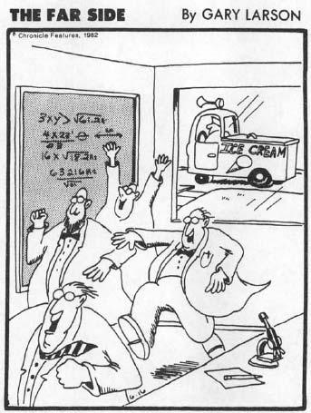

Chapter 11: Stress and a Good Night’s Sleep
Basics of sleep: Pace-Schott, E., Hobson, J., “The neurobiology of sleep; genetics, cellular physiology and subcortical networks,” Nature Reviews Neuroscience 3 (2002): 591; Siegel, J., “Why we sleep,” Scientific American (November 2003): 92.
Footnote: mallards: Rattonborg, N., Lima, S., Amlaner, C., “Half-awake to the risk of predation,” Nature (1999): 397. Dolpins and birds: Siegel, “Why we sleep,” op. cit.
Brain function during different sleep stages: Braun, A., Balkin, T., Wesensten, N., Gwadry, F., Carson, R., Varga, M., Baldwin, P., Belenky, G., Herscovitch, P., “Dissociated patterns of activity in visual cortices and their projections during human rapid eye movement sleep,” Science 279 (1998): 91. Energy depletion as a signal for sleep: Benington, J., Heller, H., “Restoration of brain energy metabolism as the function of sleep,” Progress in Neurobiology 45 (1995): 347. Why dreams are dreamlike: Sapolsky, R., “Wild dreams,” Discover 22 (2001): 36.
What is sleep for? Fruit flies’ sleep: Shaw, P., Tononni, G., Greenspan, R., Robinson, D., “Stress response genes protect against lethal effects of sleep deprivation in Drosophila,” Nature 417 (2002): 287. Theories about the purpose of sleep: Maquet, P., “The role of sleep in learning and memory,” Science 294 (2001): 1048.
Sleep and cognition: Stickgold, R., lecture at University of Wisconsin, April 2002. Consolidating information from the previous day: Fenn, K., Nusbaum, H., Margoliash, D., “Consolidation during sleep of perceptual learning of spoken language,” Nature 425 (2003): 614. Sleep deprivation disrupts consolidation: reviewed in McGaugh, J., Memory and Emotion (New York: Weidenfeld and Nicolson, 2003). Sleep deprivation is not merely stress: Maquet, “Role of sleep,” op. cit. Patterns of sleep stages predict patterns of memory consolidation: Wagner, U., Gais, S., Borm, J., “Emotional memory formation is enhanced across sleep intervals with high amounts of rapid eye movement sleep,” Learning and Memory 8 (2001): 112; Stickgold, op. cit.; Pace-Schott and Hobson, “Neurobiology of sleep,” op. cit.
McNaughton’s work: Wilson, M., McNaughton, B., “Reactivation of hippocampal ensemble memories during sleep,” Science 265 (1994): 676. Skaggs, W., McNaughton, B., “Replay of neuronal firing sequences in rat hippocampus during sleep following spatial experience,” Science 271 (1996): 1870. Similar studies in humans: Maquet, op. cit. Gene activation during sleep: Pace-Schott and Hobson, op. cit. Elevated metabolism in the hippocampus: Siegel, op. cit.
Facilitation of one type of learning by sleep deprivation: Hairston, I., Little, M., Scanlon, M., Lutan, C., Barakat, M., Palmer, T., Sapolsky, R., Heller, H., “Sleep deprivation enhances memory?” Society for Neuroscience Annual Meeting (2003): abstract 616.19.
Remarkably, a nap can benefit cognition as much as does a good night’s sleep: Mednick, S., Nakayama, K., Stickgold, R., “Sleep-dependent learning: a nap is as good as a night,” Nature Neuroscience 6 (2003): 697.
Delta sleep-inducing factor as a CIF: Okajima, T., Hertting, G., “Delta-sleep-inducing peptide inhibited CRF-induced ACTH secretion from rat anterior pituitary gland in vitro,” Hormones and Metabolic Research 18 (1986): 497.
Good overview of the subject: VanReeth, O., Weibel, L., Spiegel, K., Leproult, R., Dugovic, C., Maccari, S., “Interactions between stress and sleep: from basic research to clinical situations,” Sleep Medicine Reviews 4 (2000): 201. Activation of the stress-response during sleep deprivation: Meerlo, P., Koehl, M., van der Borght, K., Turek, F., “Sleep restriction alters the HPA response to stress,” Journal of Neuroendocrinology 14 (2002): 397–402; Cauter, E., Spiegel, K., “Sleep as a mediator of the relationship between socioeconomic status and health: a hypothesis,” Annals of the New York Academy of Sciences 896 (1999): 254. The dry quote about sleep deprivation and death: Vgontzas, A., Bixler, E., Kales, A., “Sleep, sleep disorders, and stress,” in Fink, ed., Encyclopedia of Stress (San Diego: Academic Press, 2000), vol. 3,449.
Glucocorticoids break down glycogen during sleep deprivation: Gip, P., Hagiwara, G., Sapolsky, R., Cao, V., Heller, H., Ruby, N., “Glucocorticoids influence brain glycogen levels during sleep deprivation,” American Journal of Physiology, in press. The frontal cortex recruiting other cortical regions for problem solving during sleep deprivation: Drummond, S., Brown, G., Gillin, J., Stricker, J., Wong, E., Buxton, R.,” Altered brain response to verbal learning following sleep deprivation, Nature 403 (2000): 655.
Health consequences of night work and shift work: van Cauter, E., “Sleep loss, jet lag, and shift work,” in Fink, ed., Encyclopedia of Stress, vol. 3, 447. Jet-lag study: Cho, K., “Chronic ‘jet lag’ produces temporal lobe atrophy and spatial cognitive deficits,” Nature Neuroscience 4 (2001): 567. Amounts of sleep now and in 1910: Vgontzas, “Sleep, sleep disorders, and stress,” op. cit.
Stress as a disruptor of sleep. Effects of CRH infusion: Vgontzas, A., Chrousos, G., “Sleep, the HPA axis, and cytokines: multiple interactions and disturbances in sleep disorders,” Endocrinology and Metabolism Clinics of North America 31 (2002): 15. Activated stress-response in many poor sleepers: Vgontzas and Chrousos, op. cit. Stress-producing fragmented sleep: Dugovic, C., Maccari, S., Weibel, L., Turek, F., Van Reeth, O., “High corticosterone levels in prenatally stressed rats predict persistent paradoxical sleep: Prinz, P. N., alterations,” Journal of Neuroscience 19 (1999): 8656. Less delta sleep with stress: Prinz, P. N., Bailey, S. L., Woods, D. L., “Sleep impairments in healthy seniors: roles of stress, cortisol and interleukin-1 beta,” Chronbiology International 17 (2000): 391. Glucocorticoids impair memory consolidation during sleep: Plihal, W., Pietrowsky, R., Borm, J., “Dexamethasone blocks sleep-induced improvement of declarative memory,” Psychoneuroendocrinology 24 (1999): 313–31.
The study showing the interaction of the two halves: Borm, J., Hansen, K., Marshall, L., Malle, M., Fehm, H., “Timing the end of nocturnal sleep,” Nature 397 (1999): 29.
Chapter 12: Aging and Death
Aging as not so bad. Vaillant, G., Mukamal, K., “Successful aging,” American Journal of Psychiatry 158 (2001): 839. The quality of social networks retained: Carstensen, L., Lockenhoff, C., “Aging, emotion, and evolution: the bigger picture,” Annals of the New York Academy of Sciences 1000 (2003): 152. Improved cognitive skills: Helmuth, L., “The wisdom of the wizened,” Science 299 (2003): 1300. Average aged person feels healthier than average: Vaillant, op. cit. Happiness increases with age: Carstensen, op. cit. Impact of negative images: Mather, M., and Carstensen, L., “Aging and attentional biases for emotional faces,” Psychological Sciences 14 (2003): 409; Iadaka, T., Opkada, T., Murata, T., Omori, M., “Age-related differences in the medial temporal lobe responses to emotional faces as revealed by MRI,” Hippocampus 12 (2002): 352–62.
The aged stress-response on a cellular level: Horan, M., Barton, R., Lithgow, G., “Aging and stress, biology of,” in Fink, ed., Encyclopedia of Stress (San Diego: Academic Press, 2000), vol. 1, 111.
A detailed discussion of all the ways in which the cardiovascular system functions similarly in young and old healthy subjects in the absence of stress can be found in Lakatta, E., “Heart and circulation,” in Schneider, E., and Rowe, J., eds., Handbook of the Biology of Aging, 3d ed. (San Diego: Academic Press, 1990). Decrease in maximal heart rate and work capacity with age: Gerstenblith, G., Lakatta, E., and Weisfeldt, M., “Age changes in myocardial function and exercise response,” Progress in Cardiovascular Disease 19 (1976): 1. Decreased ejection volume during exercise with age: Rodeheffer, R., Gerstenblith, G., Becker, L., Fleg, J., Weisfeldt, M., and Lakatta, E., “Exercise cardiac output is maintained with advancing age in healthy human subjects: cardiac dilatation and increased stroke volume compensate for diminished heart rate,” Circulation 69 (1984): 203. Increased cardiac muscle stiffness with force as a function of age: Spurgeon, H., Thorne, P., Yin, F., Shock, N., and Weisfeldt, M., “Increased dynamic stiffness of tabeculae carneae from senescent rats,” American Journal of Physiology 232 (1977): H373. Easier immunosuppression in aged primates: Ershler, W., Coe, C., and Gravenstein, S., “Aging and immunity in nonhuman primates. I. Effects of age and gender on cellular immune function in rhesus monkeys,” American Journal of Primatology 15 (1988): 181.
Energetics of old and young brains, the effect of age on the vulnerability of cerebral metabolism to a metabolic stressor: Benzi, G., Pastoris, O., Vercesi, L., Gorini, A., Viganotti, C., and Villa, R., “Energetic state of aged brain during hypoxia,” Gerontology 33 (1987): 207; Hoffman, W., Pelligrino, D., Miletich, D., and Albrecht, R., “Brain metabolic changes in young versus aged rats during hypoxia,” Stroke 16 (1985): 860.
Aging and body temperature—functioning in old organisms is disrupted by stress more than in young ones. The classic studies on temperature dysregulation during aging can be found in Shock, N., “Systems integration,” in Finch, C., and Hayflick, L., eds., Handbook of the Biology of Aging, 1st ed. (New York: Van Nostrand, 1977), 200.
The effect of age on performance on intelligence tests: in Birren, J., and Schaie, K., Handbook of the Psychology of Aging, 3d ed. (New York: Van Nostrand, 1990). This vast subject is reviewed in a number of chapters: Cerella, J. “Aging and information-processing rate” Kausler, D., “Motivation, human aging and cognitive performance” Hultsch, D., and Dixson, R., “Learning and memory in aging.” See also Katzman, R., and Terry, R., The Neurology of Aging (Philadelphia: Davis, 1983).
Elevated epinephrine and norepinephrine concentrations during exercise as a function of age: Fleg, J., Tzankoff, S., and Lakatta, E., “Age-related augmentation of plasma catecholamines during dynamic exercise in healthy males,” Journal of Applied Physiology 59 (1985): 1033. Decreased cardiovascular sensitivity to adrenaline and noradrenaline with age: Lakatta, E., “Catecholamines and cardiovascular function in aging,” Endocrinology and Metabolism Clinics of North America 16 (1987): 877.
Slower epinephrine-norepinephrine recovery after the end of stress: McCarty, R., “Age-related alterations in sympathetic-adrenal medullary responses to stress,” Gerontology 32 (1986): 172. Slower glucocorticoid recovery after the end of stress: Sapolsky, R., Krey, L., and McEwen, B., “The adrenocortical stress-response in the aged male rat: impairment of recovery from stress,” Experimental Gerontology 18 (1983): 55; Ida, Y., Tanaka, M., and Tsuda, A., “Recovery of stress-induced increases in noradrenaline turnover is delayed in specific brain regions of old rats,” Life Sciences 34 (1984): 2357. The delayed glucocorticoid recovery may accelerate tumor growth: Sapolsky, R., and Donnelly, T., “Vulnerability to stress-induced tumor growth increases with age in the rat: role of glucocorticoid hypersecretion,” Endocrinology 117 (1985): 662.
Resting epinephrine and norepinephrine levels increase with age: Fleg, J., Tzankoff, S., and Lakatta, E., “Age-related augmentation of plasma catecholamines during dynamic exercise in healthy males,” Journal of Applied Physiology 59 (1985): 1033; also Rowe, J., and Troen, B., “Sympathetic nervous system and aging in man,” Endocrine Reviews 1 (1980): 167. Resting glucocorticoid levels rise with age in the rat: reviewed in Sapolsky, R., “Do glucocorticoid concentrations rise with age in the rat?” Neurobiology of Aging 13 (1991): 171. In the aged human: reviewed in Sapolsky, R., “The adrenocortical axis,” in Schneider, E., and Rowe, J., eds., Handbook of the Biology of Aging, 3d ed. (New York: Academic Press, 1990). In the wild baboon: Sapolsky, R., and Altmann, J., “Incidences of hypercortisolism and dexamethasone resistance increase with age among wild baboons,” Biological Psychiatry 30 (1991): 1008.
Impaired neurogenesis: Cameron, H., McKay, R., “Restoring production of hippocampal neurons in old age,” Nature Neuroscience 2 (1999): 894. The elevated glucocorticoid levels disrupt the ability of the brain for sprouting after injury: Scheff, S., and Cotman, C., “Chronic glucocorticoid therapy alters axon sprouting in the hippocampal dentate gyrus,” Experimental Neurology 76 (1982): 644; DeKosky, S., Scheff, S., and Cotman, C., “Elevated corticosterone levels: a possible cause of reduced axon sprouting in aged animals,” Neuroendocrinology 38 (1984): 33.
For a discussion of why programmed aging (and aging in general) may have evolved, see Sapolsky, R., and Finch, C., “On growing old: not every creature ages, but most do. The question is why,” The Sciences (March-April 1991): 30. For the original demonstration of what goes wrong in the salmon, see Robertson, O., and Wexler, B., “Pituitary degeneration and adrenal tissue hyperplasia in spawning Pacific salmon,” Science 125 (1957): 1295. For a comparison of the effects of salmon aging with the effects of glucocorticoid excess, see Wexler, B., “Comparative aspects of hyperadrenocorticism and aging,” in Everitt, A., and Burgess, J., eds., Hypothalamus, Pituitary and Aging (Springfield, Ill.: Charles C. Thomas, 1976). For an introduction to the marsupial mouse aging literature, see McDonald, I., Lee, A., and Bradley, A., “Endocrine changes in dasyurid marsupials with differing mortality patterns,” General and Comparative Endocrinology 44 (1981): 292, and McDonald, I., Lee, A., and Than, K., “Failure of glucocorticoid feedback in males of a population of small marsupials (Antechinus swainsonii) during the period of mating,” Journal of Endocrinology 108 (1986): 63. Beta-amyloid in salmon brains: Maldonado, T., Jones, R., Norris, D., “Distribution of beta-amyloid and amyhloid precursor protein in the brain of spawning (senescent) salmon: a natural, brain-aging model,” Brain Research 858 (2000): 237.
A brief digression: what about those children who senesce incredibly rapidly and die of old age when they are twelve? Progeria, as the disease is called, is extremely rare. Those afflicted go bald, have bony chins, beaked noses, and dry, scratchy voices; they lose their hearing, get hardening of the arteries and heart disease (which is what usually kills them). When you try to grow some of their cells in a petri dish, you have as much trouble as you would with the cells of a seventy-year-old. Despite that, not everything about progeric kids is prematurely aged: they don’t become demented, nor do they get cancer—two diseases typically linked with aging (although not necessary features of it, obviously). General consensus in the field is that progeria is a disease of some facets of aging being accelerated, rather than the entire aging process (which indirectly demonstrates that aging involves the ticking of multiple and independent clocks in the body). For a discussion of progeria and its relationship to aging, see Finch, C., Longevity, Senescence and the Genome (Chicago: University of Chicago Press, 1991); Mills, R., and Weiss, A., “Does progeria provide the best model of accelerated aging in humans?” Gerontology 36 (1990): 84.
Can stress accelerate the aging process? For those who want to go straight to the horse’s mouth (in German), there is Rubner, M., Das problem der lebensdauer und seine beziehungen zum wachstum und ernahrung (Munich: Oldenbourg, 1908). Also see Pearl, R., The Rate of Living (New York: Knopf, 1928) for the most detailed exploration of rate-of-living hypotheses. For some of Selye’s ideas about stress and aging, see Selye, H., and Tuchweber, B., “Stress in relation to aging and disease,” in Everitt, A., and Burgess, J., eds., Hypothalamus, Pituitary and Aging (Springfield, III.: Charles C. Thomas, 1976). For a scholarly discussion of the whole topic by one of the wisest thinkers in gerontology, see chapter 5 (“Rates of living and dying: correlations of life span with size, metabolic rates, and cellular and biochemical characteristics”) in Finch, C., Longevity, Senescence, and the Genome (Chicago: University of Chicago Press, 1990).
Old humans, primates, and rats tend to become dexamethasone-resistant with age: reviewed in Sapolsky, R., “The adrenocortical axis,” in Schneider, E., and Rowe, J., eds., Handbook of the Biology of Aging, 3d ed., op. cit. In the wild baboon: Sapolsky, R., and Altmann, J., “Incidences of hypercortisolism and dexamethasone resistance increase with age among wild baboons,” Biological Psychiatry 30 (1991): 1008.
The hippocampus plays a role in inhibiting glucocorticoid secretion: reviewed in Jacobson, L., and Sapolsky, R., “The role of the hipocampus in feedback regulation of the hypothalamic-pituitary-adrenocortical axis,” Endocrine Reviews 12 (1991): 118.
The interaction between the effects of glucocorticoids on the hippocampus and the effects of the hippocampus on glucocorticoid secretion: Sapolsky, R., Krey, L., and McEwen, B., “The neuroendocrinology of stress and aging: the glucocorticoid cascade hypothesis,” Endocrine Reviews 7 (1986): 284. For an update on these ideas, see: Sapolsky, R., “Stress, glucocorticoids, and their adverse neurological effects: relevance to aging,” Experimental Gerontology 34 (1999): 721; Reagan, L., McEwen, B., “Controversies surrounding glucocorticoid-mediated cell death in the hippocampus,” Journal of Chemical Neuroanatomy 13 (1997): 149.
For a somewhat dated review of this entire topic in unreadably technical detail, the truly masochistic may want to buy a dozen copies of Sapolsky, R., Stress, the Aging Brain and the Mechanisms of Neuron Death (Cambridge, Mass.: MIT Press, 1992).
Chapter 13: Why Is Psychological Stress Stressful?
Footnote: Teddy Roosevelt’s childhood lament can be found in Morris, E., The Rise of Theodore Roosevelt (New York: Ballantine Books, 1979).
For a history of the field of stress research, as well as the celebrated debate between Selye and Mason, see Selye, H., “Confusion and controversy in the stress field,” Journal of Human Stress 1 (1975): 37; Mason, J., “A historical view of the stress field,” Journal of Human Stress 1 (1975): 6.
Outlets for frustration: for a nontechnical review of Weiss’s work, see Weiss, J., “Psychological factors in stress and disease,” Scientific American 226 (June 1972): 104. The demonstration that social support networks are associated with lower glucocorticoid concentrations can be found in Ray, J., and Sapolsky, R., “Styles of male social behavior and their endocrine correlates among high-ranking wild baboons,” American Journal of Primatology 28 (1992): 231; Virgin, C., and Sapolsky, R., “Styles of male social behavior and their endocrine correlates among low-ranking baboons,” American Journal of Primatology 42 (1997): 25.
Support and rodents: Ruis, M., te Brake, J., Buwalda, B., De Boer, S., Meerlo, P., Korte, S., Blokhuis, H., Koolhaas, J., “Housing familiar male wild-type rats together reduces the long-term adverse behavioural and physiological effects of social defeat,” Psychoneuroendocrinology 24 (1999): 285. Support an nonhuman primates in a novel setting: Gust, D., Gordon, T., Brodie, A., and McClure, H., “Effect of companions in modulating stress associated with new group formation in juvenile rhesus macaques,” Physiology and Behavior 59 (1996): 941; Smith, T., McGreer-Whitworth, B., French, J., “Close proximity of the heterosexual partner reduces the physiological and behavioral consequences of novel-cage housing in black tufted-ear marmosets (Callithrix kuhli),” Hormones and Behavior 34 (1998): 211; Sapolsky, R., Alberts, S., Altmann, J., “Hypercortisolism associated with social subordinance or social isolation among wild baboons,” Archives of General Psychiatry 54 (1997): 1137; Aureli, F., Preston, S., de Waal, F., “Heart rate responses to social interactions in free-moving rhesus macaques: a pilot study,” Journal of Comparative Psychology 113 (1999): 59.
Supportive friend during human stressors: Lepore, S., Allen, K., and Evans, G., “Social support lowers cardiovascular reactivity to an acute stressor,” Psychosomatic Medicine 55 (1993): 518; Edens, J., Larkin, K., and Abel, J., “The effect of social support and physical touch on cardiovascular reactions to mental stress,” Journal of Psychosomatic Research 36 (1992): 371; Gerin, W., Pieper, C., Levy, R., and Pickering, T., “Social support in social interaction: a moderator of cardiovascular reactivity,” Psychosomatic Medicine 54 (1992): 324; Kamarck, T., Manuck, S., and Jennings, J., “Social support reduces cardiovascular reactivity to psychological challenge: a laboratory model,” Psychosomatic Medicine 52 (1990): 42. Glucocorticoids in stepchildren: Flinn, M., and England, B., “Social economics of childhood glucocorticoid stress response and health,” American Journal of Physical Anthropology 102 (1997): 33. Breast cancer study: Turner-Cobb, J., Sephton, S., Koopman, C., Blake-Mortimer, J., and Spiegel, D., “Social support and salivary cortisol in women with metastatic breast cancer,” Psychosomatic Medicine 62 (2000): 337.
Social support and sympathetic nervous system: Fleming, R., “Mediating influence of social support on stress at Three Mile Island,” Journal of Human Stress 8 (1982): 14. Social support and cardiovascular disease: Williams, R., and Littman, A., “Psychosocial factors: role in cardiac risk and treatment strategies,” Cardiology Clinics 14 (1996): 97.
The health benefits of grooming (in nonhuman primates) and touch (in humans) can be found in: Boccia, M., Reite, N. M., Laudenslager, M., “On the physiology of grooming in a pigtail macaque,” Physiology and Behavior 45 (1989): 667; Drescher, V., Gantt, W., Whitehead, W., “Heart rate response to touch,” Psychosomatic Medicine 42 (1980): 559.
Social support at the community level: Boydell, J., van Os, J., McKenzie, K., “Incidence of schizophrenia in ethnic minorities in London: ecological study into interactions with environment,” British Journal of Medicine 323 (2001): 1336; Neeleman, J., Wilson-Jones, C., Wessely, S., “Ethnic density and deliberate self-harm; a small area study in south east London,” Journal of Epidemiology and Community Health 55 (2001): 85.
Finally, a recent paper shows that the health benefits of sociality extend into some unexpected realms; among wild baboons, the more social a female is (independent of ecological factors or social rank), the better the survival chances of her offspring: Silk, J., Alberts, S., Altmann, J., “Social bonds of female baboons enhance infant survival,” Science 302 (2003): 1231.
Importance of predictability: Abbott, B., Schoen, L., and Badia, P., “Predictable and unpredictable shock: behavioral measures of aversion and physiological measures of stress,” Psychological Bulletin 96 (1984): 45; Davis, H., and Levine, S., “Predictability, control, and the pituitary-adrenal response in rats,” Journal of Comparative and Physiological Psychology 96 (1982): 393; Seligman, M., and Meyer, B., “Chronic fear and ulcers with rats as a function of the unpredictability of safety,” Journal of Comparative and Physiological Psychology 73 (1970): 202. Predictability: an analysis similar to mine (a warning signal tells you when to worry and, even more important, when you can relax) has been termed the safety-signal hypothesis by psychologist Martin Seligman, Helplessness: On Depression, Development and Death (San Francisco: W. H. Freeman and Co., 1975).
Parachute jumpers habituating: Ursin, H., Baade, E., and Levine, S., Psychobiology of Stress: A Study of Coping Men (New York: Academic Press, 1978).
The stress-response in migrating birds, reviewed in: Wingfield, J., Sapolsky, R., “Reproduction and resistance to stress: when and how,” Journal of Neuroendocrinology 15 (2003): 711.
Ulcers and bombings in World War II: Stewart, D., and Winser, D., “Incidence of perforated peptic ulcer: effect of heavy air-raids,” The Lancet (28 February 1942): 259.
Control: you don’t actually need to exercise control in order to get its benefits: Glass, D., and Singer, J., Urban Stress: Experiments on Noise and Social Stressors (New York: Academic Press, 1972). Effects of uncontrollability on tumor growth: Visintainer, M., Volpicelli, J., and Seligman, M., “Tumor rejection in rats after inescapable or escapable shock,” Science 216 (1982): 437. General references for control being helpful: Houston, B., “Control over stress, locus of control, and response to stress,” Journal of Personality and Social Psychology 21 (1972): 249; Lundberg, U., and Frankenhaeuser, M., “Psychophysiological reactions to noise as modified by personal control over stimulus intensity,” Biological Psychology 6 (1978): 51; Brier, A., Albus, M., Pickar, D., Zahn, T. P., Wolkowitz, O., and Paul, S., “Controllable and uncontrollable stress in humans: alterations in mood and neuroendocrine and psychophysiological function,” American Journal of Psychiatry 144 (1987): 1419; Manuck, S., Harvey, A., Lechleiter, S., and Neal, K., “Effects of coping on blood pressure responses to threat of aversive stimulation,” Psychophysiology 15 (1978): 544. Rats forced to exercise: Moraska, A., Deak, T., Spencer, R., Roth, D., Fleshner, M., “Treadmill running produces both positive and negative physiological adaptations in Sprague-Dawley rats,” American Journal of Physiology: Regulatory, Integrative and Comparative Physiology 279 (2000): R1321. A masterful review can be found in: Haidt, J., Rodin, J., “Control and efficacy as interdisciplinary bridges,” Review of General Psychology 3 (2000): 317.
Stress and control in the workplace: Karasek, R., Theorell, T., Health, Work, Stress, Productivity, and the Reconstruction of Working Life (New York: Basic Books, 1990); Schnall, P., Pieper, C., Schwartz, J., Karasek, R., Schlussel, Y., Devereux, R., Ganau, A., Alderman, M., Warren, K., Pickering, T., “Relationship between job strain, workplace diastolic blood pressure, and left ventricular mass index,” Journal of the American Medical Association 263 (1990): 1929; Steptoe, A., Kunz-Ebrecht, S., Owen, N., Feldman, P., Rumley, A., Lowe, G., Marmot, M., “Influence of socioeconomic status and job control on plasma fibrinogen responses to acute mental stress,” Psychosomatic Medicine 65 (2003): 137. Job stress only occurs in certain domains: Kohn, M., Schooler, C., Work and Personality; An Inquiry into the Impact of Social Stratification (Norwood, N.J.: Ablex, 1983). Stressed orchestra musicians: Levine, R., Levine, S., “Why they are not smiling: stress and discontent in the orchestral workplace,” Harmony 2 (1996): 15–25.
The perception of things worsening or improving: baboons rising or declining in the hierarchy: Sapolsky, R., “Cortisol concentrations and the social significance of rank instability among wild baboons,” Psychoneuroendocrinology 17 (1992): 701 (cortisol is glucocorticoid found in the bloodstream of primates and humans). Parents of children with cancer: Wolff, C., Friedman, S., Hofer, M., and Mason, J., “Relationship between psychological defenses and mean urinary 17-hydroxycorticosteroid excretion rates,” Psychosomatic Medicine 26 (1964): 576 (17-hydroxycorticosteroids are the versions of glucocorticoids that humans excrete).
The use of random terror among competitive baboons: Silk, J., “Practice random acts of aggression and senseless acts of intimidation: the logic of status contest in social groups,” Evolutionary Anthropology 11 (2002): 221.
Change as stressful, even if good: Shively, C., Laber-Laird, K., Anton, R., “Behavior and physiology of social stress and depression in female cynomolgus monkeys,” Biological Psychiatry 41 (1997): 871.
Predictive information doesn’t work with long lag time: Pitman, D., Natelson, B., Ottenweller, J., McCarty, R., Pritzel, T., and Tapp, W., “Effects of exposure to stressors of varying predictability on adrenal function in rats,” Behavioral Neuroscience 109 (1995): 767; Arthur, A., “Stress of predictable and unpredictable shock,” Psychological Bulletin 100 (1986): 379.
Subtleties of control: DeGood, D., “Cognitive control factors in vascular stress responses,” Psychophysiology 12 (1975): 399; Houston, B., “Control over stress, locus of control, and response to stress,” Journal of Personality and Social Psychology 21 (1972): 249; Lundberg, U., and Frankenhaeuser, M., “Psychophysiological reactions to noise as modified by personal control over stimulus intensity,” Biological Psychology 6 (1978): 51.
Executive stress syndrome and ulcerating monkeys: technical and nontechnical versions of the famous experiment with executive monkeys can be found, respectively, in Brady, J., Porter, R., Conrad, D., and Mason, J., “Avoidance behavior and the development of gastroduodenal ulcers,” Journal of the Experimental Analysis of Behavior I (1958): 69; and Brady, J., “Ulcers in ‘executive’ monkeys,” Scientific American 199 (1958): 95. Technical and nontechnical critiques by Weiss of this experiment can be found, respectively, in Weiss, J., “Effects of coping response on stress,” Journal of Comparative and Physiological Psychology 65 (1968): 251, and Weiss, J., “Psychological factors in stress and disease,” Scientific American 226 (1972): 104. A technical critique is also offered by Natelson, B., Dubois, A., and Sodetz, F., “Effect of multiple stress procedures on monkey gastro-duodenal mucosa, serum gastrin and hydrogen ion kinetics,” American Journal of Digestive Diseases 22 (1977): 888.
Many of the ideas in this chapter will be returned to in the final chapter on stress management, along with additional references.
Chapter 14: Stress and Depression
Five to 20 percent of the population will suffer from a major depression: Robins, L., Helzer, J., Weissman, M., Orvaschel, H., Gruenberg, E., Burke, J., and Regier, D., “Lifetime prevalence of specific psychiatric disorders in three sites,” Archives of General Psychiatry 41 (1984): 949; Weissman, M., and Myers, J., “Rates and risks of depressive symptoms in a United States urban community,” Acta Psychiatrica Scandinavica 57 (1978): 219; Helgason, T., “Epidemiological investigation concerning affective disorders,” in Schor, M., and Stromgren, M., eds., Origin, Presentation and Treatment of Affective Disorders (London: Academic Press, 1979), 241. The rate is increasing: Klerman, G., Weissman, M., “Increasing rates of depression,” Journal of the American Medical Association 261 (1989): 2229. Second leading cause of disability: Science 288, 39.
Good descriptions of the symptoms found in different depressive subtypes can be found in the bible on the subject, the Diagnostic and Statistical Manual of Mental Disorders (DSM-III-R), 3d ed., rev. (Washington, D.C.: American Psychiatric Association, 1987). Also see Gold, P., Goodwin, F., and Chrousos, G., “Clinical and biochemical manifestations of depression: relation to the neurobiology of stress,” New England Journal of Medicine 319 (1988): 348. Positive and negative emotions are not mere opposites: Zautra, A., Emotions, Stress and Health (New York: Oxford University Press, 2003).
Re 800,000 suicides a year: “Spirit of the age,” The Economist (18 December 1998): 113.
Footnote: who is at risk for depression: Whooley, M., and Simon, G., “Managing depression in medical outpatients,” New England Journal of Medicine 343 (2000): 1942.
For the classic discussion of depression as a cognitive disorder, see Beck, A., Cognitive Therapy and the Emotional Disorders (New York: International Universities Press, 1976).
Vegetative symptoms: for the first report of sleep changes in many depressives: Diaz-Guerrero, R., Gottlieb, J., and Knott, J., “The sleep of patients with manic-depressive psychosis, depressive type: an electroencephalographic study,” Psychosomatic Medicine 8 (1946): 399. Also see Coble, P., Foster, F., and Kupfer, D., “Electroencephalographic sleep diagnosis of primary depression,” Archives of General Psychiatry 33 (1976): 1124; Gillin, J., Duncan, W., Pettigrew, K., Frankel, B., and Snyder, F., “Successful separation of depressed, normal and insomniac subjects by EEG sleep data,” Archives of General Psychiatry 36 (1979): 85. Cortisol (glucocorticoid) levels are elevated in many depressives; for an early demonstration of this, see Sachar, E., “Neuroendocrine abnormalities in depressive illness,” in Sachar, E., ed., Topics of Psychoendocrinology (New York: Grune and Straton, 1975), 135. For a more recent review, see Sapolsky, R., and Plotsky, P., “Hypercortisolism and its possible neural bases,” Biological Psychiatry 27 (1990): 937.
Memory problems in depression: Austin, M., Mitchell, P., Goodwin, G., “Cognitive deficits in depression,” British Journal of Psychiatry 178 (2001): 200.
Depressive symptomatology can follow cyclic patterns over time; a classic demonstration of this can be found in Richter, C., “Two-day cycles of alternating good and bad behavior in psychotic patients,” Archives of Neurology and Psychiatry 39 (1938): 587. For a good review of seasonal affective disorders, see Rosenthal, N., Sack, D., Gillin, C., Lewy, A., Goodwin, F., Davenport, Y., Mueller, P., Newsome, D., and Wehr, T., “Seasonal affective disorder,” Archives of General Psychiatry 41 (1984): 72. For demonstrations of the use of light therapy for SADs, see Rosenthal, N., Sack, D., Carpenter, C., Parry, B., Mendelson, W., and Wehr, T., “Antidepressant effects of light in seasonal affective disorder,” American Journal of Psychiatry 142 (1985): 163; Wehr, T., Jacobsen, F., Sack, D., Arendt, J., Tamarkin, L., and Rosenthal, N., “Phototherapy of seasonal affective disorder,” Archives of General Psychiatry 43 (1986): 870. Retinal cells sending information to the limbic system: Barinaga, M., “How the brain’s clock gets daily enlightenment,” Science 295 (2002): 955.
The neurochemistry of depression is a vast subject with a dizzying number of papers, many of them contradicting one another. For an authoritative and relatively accessible discussion of the current confusion about whether it is a neuroepinephrine, dopamine, or serotonin problem, involving too much or too little of the neurotransmitters, or too much or too little of the receptors, see Kandel, E., “Disorders of mood,” in Kandel, E., Schwartz, J., and Jessell, T., eds., Principles of Neural Sciences, 3d ed. (New York: Elsevier, 1991). An excellent and accessible introduction to the topic of neurotransmitters can be found in Barondes, S., Molecules and Mental Illness (New York: Scientific American Library, W. H. Freeman, 1993).
Footnote: St. John’s wort as effective: DiCarlo, G., Borrelli, F., Ernst, E., Izzo, A., “St. John’s wort: Prozac from the plant kingdom,” Trends in Pharmacological Sciences 22 (2001): 292. St. John’s wort disrupting efficacy of other medications: Vogel, G., “How the body’s ‘garbage disposal’ may inactivate drugs,” Science 291 (2001): 35.
A brief tirade about ECT: few medical procedures of our time have a worse popular image. In the past, ECT involved sufficient amounts of electricity to cause brain damage and memory loss, and to induce convulsions, causing body injury. Far worse, ECT’s use for all sorts of things besides intractable depression—behavior disorders, juvenile delinquency, and so on—smacked of medicopolitical control and punishment. However, ECT is now conducted very differently—far less electricity is used, and there is no evidence that the modern form of ECT causes brain damage or permanent memory loss. Moreover, people are now typically sedated during ECT sessions, which virtually eliminates the danger of physical injury from convulsing. Most important, when it is administered correctly, ECT can save lives. For people who have been through every type of psychotherapy, every known antidepressant, and every combination of the two, yet are still suicidally depressed, ECT may be the only known technique that will ever get them functioning again. It can be an extraordinarily helpful procedure, and many former depressives swear by it. For a discussion of the history of ECT and its rather safe record as currently used, see Fink, M., “Convulsive therapy: fifty years of progress,” Convulsive Therapy I (1985): 204. Mechanisms of ECT action: some papers showing effects of ECT on numbers of receptors for norepinephrine and related neurotransmitters: Kellar, K., and Stockmeier, C., “Effects of electroconvulsive shock and serotonin axon lesions on beta-adrenergic and serotonin-2 receptors in rat brain,” Annals of the New York Academy of Sciences 462 (1986): 76; Chiodo, L., and Antelman, S., “Electroconvulsive shock: progressive dopamine autoreceptor subsensitivity independent of repeated treatment,” Science 210 (1980): 799; Reches, A., Wagner, H., Barkai, A., Jackson, V., Yablonskaya-Alter, E., and Fahn, S., “Electroconvulsive treatment and haloperidol: effects on pre- and postsynaptic dopamine receptors in rat brain,” Psychopharmacology 83 (1984): 155. Devan, D., Dwork, A., Hutchinson, E., Bolwig, T., Sackeim, H., “Does ECT alter brain structure?” American Journal of Psychiatry 151 (1994): 957. Also see: Fink, M., Electroshock: Restoring the Mind (New York: Oxford University Press, 1999).
Pleasure pathways in the brain; for a history of the start of this field by one of its two discoverers, see Milner, P., “The discovery of self-stimulation and other stories,” Neuroscience and Biobehavioral Reviews 13 (1989): 61. For another general overview of the field, see Routtenberg, A., “The reward system of the brain,” Scientific American (November 1978). For a demonstration that stimulation of these pathways can be more reinforcing than food, see Routtenberg, A., and Lindy, J., “Effects of the availability of rewarding septal and hypothalamic stimulation on bar pressing for food under conditions of deprivation,” Journal of Comparative and Physiological Psychology 60 (1965): 158. For an early study implicating norepinephrine in the pleasure pathway, see Stein, L., “Effects and interactions of imipramine, chlorpromzaine, reserpine, and amphetamine on self-stimulation: possible neurophysiological basis of depression,” in Wortis, J., ed., Recent Advances in Biological Psychiatry, vol. 4 (New York: Plenum, 1962), 288. This study showed that norepinephrine depletion in the rat decreases self-stimulation of the pleasure pathways. In recent years, there has been a shift in this field away from considering norepinephrine to be the principal neurotransmitter of the pleasure pathways, much as there has been a shift away from considering it the sole culprit in depression. A neurotransmitter called dopamine is moving toward the forefront as the first neurotransmitter among equals involved in pleasure signaling. This makes some sense, as cocaine works mostly on dopamine synapses. However, although norepinephrine is probably not the most important neurotransmitter of pleasure perception, a defect in norepinephrine regulation in that part of the brain still has a great deal of potential for wreaking havoc. In considering how multiple neurotransmitters are used in many synaptic steps in these pleasure pathways, an analogy might help: a long cable may be made of stronger and weaker materials at different points; nevertheless, severing the cable in any place causes problems, and the norepinephrine link might be where the severing occurs. This is reviewed in Milner, P., “Brain-stimulation reward: a review,” Canadian Journal of Psychology 45 (1991): 1.
A review of the human literature regarding pleasure pathways and self-stimulation can be found in Heath, R., “Electrical self-stimulation of the brain in man,” American Journal of Psychiatry 120 (1963): 571.
Substance P blockers as antidepressants: Bondya, B., Baghaia, T., Minova, C., Schulea, C., Schwarza, M., Zwanzgera, P., Rupprechta, R., Mullera, H., “Substance P serum levels are increased in major depression: preliminary results,” Biological Psychiatry 53 (2003): 538. Also, discussed in: Fava, M., Kendler, K., “Major depressive disorder,” Neuron 28 (2000): 335.
For a discussion of the cons and surprising number of pros concerning cingulotomy (and for a thoughtful discussion of psychosurgical controversies in general), see Konner, M., “Too desperate a cure?” originally published in The Sciences (May 1988): 6; reprinted in Konner, M., Why the Reckless Survive (New York: Viking Penguin, 1990). For a technical discussion of the outcome of cingulotomies, see Ballantine, H., Bouckoms, A., Thomas, E., and Giriunas, I., “Treatment of psychiatric illness by stereotactic cingulotomy,” Biological Psychiatry 22 (1987): 807. For a history of psychosurgery and its accompanying controversies, see Valenstein, E., Great and Desperate Cures: The Rise and Decline of Psychosurgery and Other Radical Treatments for Mental Illness (New York: Basic Books, 1986). Interestingly, a 1992 study supports the rough picture of “the cortex whispering too many depressing thoughts to the limbic system” and demonstrates that depressed patients have enhanced metabolism (relative to nondepressed patients) in the prefrontal cortex and the amygdala: Drevets, W., Videen, T., Price, J., Preskorn, S., Carmichael, S., and Raichle, M., “A functional anatomical study of unipolar depression,” Journal of Neuroscience 12 (1992): 3628.
The anterior cingulate cortex; positive emotions inhibit ACC: Aalto, S., Naatanen, P., Wallius, E., Metsahonkaala, L., Stenman, H., Niemi, P., Karlsson, H., “Neuroanatomical substrate of amusement and sadness: a PET activation study using film stimuli,” NeuroReport 13 (2002): 67–73. ACC stimulation and a sense of foreboding: Drevets, W., “Neuroimaging and neuropathological studies of depression: implications for the cognitive-emotional features of mood disorders,” Current Opinion in Neurobiology 11 (2001): 240. Hypnotism and ACC activation: Rainville, P., Duncan, D., Price, D., Carrier, B., Bushnell, M., “Pain affect encoded in human anterior cingulated but not somatosensory cortex,” Science 277 (1997): 968. ACC activated by pain: Hutchison, W., Davis, K., Lozano, A., Tasker, R., Dostrovsky, J., “Pain-related neurons in the human cingulated cortex,” Nature Neuroscience 2 (1999): 403. Widows and ACC activation: O’Connor, M., Littrell, L., Fort, C., Lane, R., “Functional neuroanatomy of grief: an MRI study,” American Journal of Psychiatry 160 (2003): 1946. ACC activated when excluded in a game: Eisenberger, N., Lieberman, M., Williams, K., “Does rejection hurt? An fMRI study of social exclusion,” Science 302 (2003): 290. Sad faces cause exaggerated ACC responses: Drevets, op. cit. Davidson’s work on laterality of ACC activation: Davidson, R., Jackson, D., Kalin, N., “Emotion, plasticity, context, and regulation: perspectives from affective neuroscience,” Psychological Bulletin 126 (2000): 890. ACC activation patterns in infant monkey: Rilling, J., Winslow, J., O’Brien, D., Gutman, D., Hoffman, J., Kilts, C., “Neural correlates of maternal separation in rhesus monkeys,” Biological Psychiatry 49 (2001): 146.
The genetics of depression is reviewed in Kendler, K., Prescott, C., Myers, J., Neale, M., “The structure of genetic and environmental risk factors for common psychiatric and substance use disorders in men and women,” Archives of General Psychiatry 60 (2003): 929.
Immune activation and depression: Dantzer, R., “Cytokines and depression: an update,” Brain Behavior and Immunity 16 (2002): 501; Anisman, H., Merali, Z., “Cytokines, stress, and depressive illness,” Brain, Behavior and Immunity 16 (2002): 513.
Thyroid hormone insufficiency can lead to depression: Denko, J., and Kaelbling, R., “Psychiatric aspects of hypoparathyroidism,” Acta Psychiatrica Scandinavica 38 (1962): supp. 164, 7; Whybrow, P., Prange, A., and Treadway, C., “Mental changes accompanying thyroid gland dysfunction,” Archives of General Psychiatry 20 (1969): 47. One way in which this may occur comes with the finding that thyroid hormones influence norepinephrine processing in the brain: Prange, A., Meek, J., and Lipton, M., “Catecholamines: diminished rate of synthesis in rat brain and heart after thyroxine pretreatment,” Life Sciences 9 (1970): 901. Many patients with depression turn out to have an underlying thyroid hormone deficiency: Lipton, M., Breese, G., Prange, A., Wilson, I., and Cooper, B., “Behavioral effects of hypothalamic polypeptide hormones in animals and man,” in Sacher, E., ed., Hormones, Behavior and Psychopathology (New York: Raven Press, 1976), 15. Hypothyroidism can cause resistance to antidepressants: Bauer, M., Heinz, A., Whybrow, P., “Thyroid hormones, serotonin and mood: of synergy and significance in the adult brain,” Molecular Psychiatry 7 (2002): 140–56; Cole, D., Thase, M., Mallinger, A., Soares, J., Luther, J., Kupfer, D., Frank, E., “Slower treatment response in bipolar depression predicted by lower pretreatment thyroid function,” American Journal of Psychiatry 159 (2002): 116.
Higher rates of depression in women than in men: Murphy, M., Sobol, A., Neff, R., Olivier, D., and Leighton, A., “Stability of prevalence,” Archives of General Psychiatry 41 (1984): 990. More depressive episodes in bipolar women than men: Gater, R., Tansella, M., Korten, A., Tiemens, B., Mavreas, V., Olatawura, M., “Sex differences in the prevalence and detection of depressive and anxiety disorders in general health care settings: report from the World Health Organization Collaborative Study on psychological problems in general health care,” Archives of General Psychiatry 55 (1998): 405. Sex differences in the rates of depression: the best overview of some of the nonhormonal theories can be found in Nolen-Hoeksma, S., “Sex differences in depression: theory and evidence,” Psychological Bulletin 101 (1987): 259. Hormonal aspects of sex differences in depression: women have particularly high incidences of depression around the time of menstruation: Abramowitz, E., Baker, A., and Fleischer, S., “Onset of depressive psychiatric crises and the menstrual cycle,” American Journal of Psychiatry 139 (1982): 475. The immediate postparturition period is one of great risk for depression: Campbell, S., and Cohn, J., “Prevalence and correlates of postpartum depression in first-time mothers,” Journal of Abnormal Psychology 100 (1991): 594; O’Hara, M., Schlechte, J., Lewis, D., and Wright, E., “Prospective study of postpartum blues: biologic and psychosocial factors,” Archives of General Psychiatry 48 (1991): 801. What is generally viewed to be a heretical idea was voiced in a recent study, namely, that fathers have the same rate of postpartum depression as mothers do: Richman, J., Raskin, V., and Gaines, C., “Gender roles, social support, and postpartum depressive symptomatology,” Journal of Nervous and Mental Disease 179 (1991): 139.
Issues of gender differences in control and in substance abuse in traditional societies. Loewenthal, K., Goldblatt, V., “Gender and depression in Anglo-Jewry,” Psychological Medicine 25 (1995): 1051. I found this study to be quite confusing, or at least challenging of my expectations. This paper initially seemed to test the idea that the gender difference was an artifact of men being more likely than women to mask their depression in alcoholism and other forms of substance abuse (i.e., the depressed alcoholic is more likely to get categorized as an alcoholic than as a depressive). Thus, the authors examined a population of Orthodox Jews, among whom rates of alcohol and drug abuse are exceedingly low. If in the general population, men have a depression rate of X and women 2X, one would expect the rates of depression in these Orthodox women and men to both be 2X (in other words, in the general population, men actually had 2X rates of depression, but half of those cases were categorized as substance abuse). The paper did indeed report equivalent rates of depression in women and in men among Orthodox Jews, in sharp contrast to the general population. However, rather than everyone having the 2X rate of the general population, everyone was more like X. Thus, it wasn’t the lack of alcoholism unmasking the higher rate of depression in men. Rather, it was something about Orthodoxy lowering the depression rate in women to the lower levels seen in men. The authors suggested that this was due to the honored and socially meaningful role of women in Orthodox Jewish society. As someone who was raised in such a community, I find myself to be a bit skeptical of this interpretation, but cannot offer a better one.
Estrogen and progesterone have effects on the brain; as just some examples of these, estrogen will change the electrical excitability of the brain (Teyler, T., Vardaris, R., Lewis, D., and Rawitch, A., “Gonadal steroids: effects on excitability of hippocampal pyramidal cells,” Science 209 [1980]: 1017) and the number of receptors for some of the major neurotransmitters (Schumacher, M., “Rapid membrane effects of steroid hormones: an emerging concept in neuroendocrinology,” Trends in Neurosciences 13 [1990]: 359; see also Weiland, N., “Sex steroids alter N-methyl-D-aspartate receptor binding in the hippocampus,” Society for Neuroscience Abstracts 16 [1990]: 959), as well as the number of receiving sites on dendrites (“dendritic spines”) that form synapses with axon terminals. This last observation is particularly interesting, as it has been shown that the number of dendritic spines fluctuates in parts of the brain of the rat as a function of the reproductive cycle of the female (Woolley, C., Gould, E., Frankfurt, M., and McEwen, B., “Naturally occurring fluctuation in dendritic spine density on adult hippocampal pyramidal neurons,” Journal of Neuroscience 10 [1990]: 4035; Young, E., Korszun, A., “Psychoneuroendocrinology of depression: Hypothalamic-pituitary-gonadal axis,” Psychiatric Clinics of North America 21 [1999]: 309).
Progesterone also has effects, in that one of its breakdown products (metabolites) can bind to one of the main neurotransmitter receptor types in the brain and alter its functioning: Majewska, M., Harrison, N., Schwartz, R., Barker, J., and Paul, S., “Steroid hormone metabolites are barbiturate-like modulators of the GABA receptor,” Science 232 (1986): 1004. This is particularly interesting for two reasons. First, the fact that the critical agent there is not progesterone but its metabolite (called 3-alpha-hydroxy-5-alpha-dihydroprogesterone by its close friends) means that one must keep track of not only how much progesterone there is on the scene but how much of it gets converted to the metabolite. Of particular interest in terms of the menstrual cycle, progesterone, mood, and depression is the fact that these progesterone metabolites bind to the same receptor complex that binds the benzodiazepine tranquilizers (like those marketed as Valium and Librium) as well as barbiturate anesthetics (“downers”). Moreover, at proper doses, this progesterone metabolite can work as an anesthetic itself (such “steroid anesthetics” have even been used on humans during surgery). No one has quite sorted out the functional significance of this yet, but everyone assumes that something extremely interesting is going on.
Finally, for a way in which estrogen and progesterone can alter the action of antidepressant drugs in the brain, see Wilson, M., Dwuyer, K., and Roy, E., “Direct effects of ovarian hormones on antidepressant binding sites,” Brain Research Bulletin 22 (1989): 181. For a demonstration that females break down antidepressant drugs in the bloodstream more slowly than males, so that more gets into the brain, see Biegon, A., and Samuel, D., “The in vivo distribution of an antidepressant drug (DMI) in male and female rats,” Psychopharmacology 65 (1979): 259. For a fascinating discussion of the ways in which people of different ethnic backgrounds vary in their sensitivity to various psychoactive drugs, see Holden, C., “New center to study therapies and ethnicity,” Science 251 (1991): 748.
For broad discussions of the connections between stress and depression, see Gold, P., Goodwin, F., and Chrousos, G., “Clinical and biochemical manifestations of depression: relation to the neurobiology of stress,” New England Journal of Medicine 319 (1988): 348 (outlines a model, similar to that proposed in this chapter, of the genetic defect in depression as a failure for stress to induce tyrosine hydroxylase); Zis, A., and Goodwin, F., “Major affective disorders as a recurrent illness: a critical review,” Archives of General Psychiatry 36 (1979): 385; Anisman, H., and Zacharko, R., “Depression: the predisposing influence of stress,” Behavioral and Brain Science 5 (1982): 89; Turner, R., and Beiser, M., “Major depression and depressive symptomatology among the physically disabled: assessing the role of chronic stress,” Journal of Nervous and Mental Disease 178 (1990): 343. Stress generation among depressives: Roberts, J., Ciesla, J., “Stress generation in the context of depressive disorders,” in Fink, G., ed., Encyclopedia of Stress, vol. 3, 512.
Major stressors preceding first major depression: Brown, G., Harris, T., Social Origins of Depression (New York: Free Press, 1978); Brown, G., Harris, T., Hepworth, C., “Loss, humiliation and entrapment among women developing depression: a patient and non-patient comparison,” Psychological Medicine 25 (1995): 7. For some studies examining factors that predict who becomes depressed in response to major stressors, see: Maciejewiski, P., Prigerson, H., Mazure, C., “Self-efficacy as a mediator between stressful life events and depressive symptoms: differences based on history of prior depression,” British Journal of Psychiatry 176 (2000): 373; Mitchell, P., Parker, G., Gladstone, G., Wilhelm, K., Austin, V., “Severity of stressful life events in first and subsequent episodes of depression: the relevance of depression subtype,” Journal of Affective Disorders 73 (2003): 245.
A predisposing gene: Caspi, A., Sugden, K., Moffitt, T., Taylor, A., Craig, I., Harrington, H., McClay, J., Mill, J., Martin, J., Braithwait, A., Poulton, R., “Influence of life stress on depression: moderation by a polymorphism in the 5-HTT gene,” Science 301 (2003): 386. A similar finding in nonhuman primates: Bennett, A., Lesch, K., Heils, A., Long, J., Lorenz, J., Shoaf, S., Champoux, M., Suomi, S., Linnoila, M., Higley, J., “Early experience and serotonin transporter gene variation interact to influence primate CNS function,” Biological Psychiatry 7 (2002): 118.
Low glucocorticoid levels in atypical depression: Gold, P., Chrousos, G., “Organization of the stress system and its dysregulation in melancholic and atypical depression: high versus low CRH/NE states,” Molecular Psychiatry 7 (2002): 254–75.
Feedback problems in depression, for review, see: Pariante, C., Miller, A., “Glucocorticoid receptors in major depression: relevance to pathophysiology and treatment,” Biological Psychiatry 49 (2001): 391.
Stress alters neurochemistry relevant to depression: reviewed in; Tafet, G., Bernardini, R., “Psychoneuroendocrinological links between chronic stress and depression,” Progress in Neuro-Psychopharmacology and Biological Psychiatry 27 (2003): 893; Sabban, E., Kvetnansky, R., “Stress-triggered activation of gene expression in catecholaminergic systems: dynamics of transcriptional events,” Trends in Neurosciences 24 (2001): 91. For an immensely interesting link between glucocorticoids and the neurochemistry of serotonin, see: Glatz, K., Mossner, R., Heils, A., Lesch, K., “Glucocorticoid-regulated human serotonin transporter (5-HTT) expression is modulated by the 5-HTT gene-promoter-linked polymorphic region,” Journal of Neurochemistry 86 (2003): 1072. Also: van Riel, E., Meijer, O., Steenbergen, P., Joels, M., “Chronic unpredictable stress causes attenuation of serotonin responses in cornu ammonis 1 pyramidal neurons,” Neuroscience 120 (2003): 649. For a demonstration that uncontrollable, but not controllable, stress alters serotonin neurochemistry, see: Bland, S., Twining, C., Watkins, L., Maier, S., “Stressor controllability modulates stress-induced serotonin but not dopamine efflux in the nucleus accumbens shell,” Synapse 49 (2003): 206.
The consequences of the elevated glucocorticoid levels in depression: Immunity: Irwin, M., “Depression and immunity,” in Ader, R., Felten, D., Cohen, N., eds., Psychoneuroimmunology, 3d ed. (San Diego: Academic Press, 2001), vol. 2, 383. Osteoporosis: Cizza, G., Ravn, P., Chrousos, G., Gold, P., “Depression: a major, unrecognized risk factor for osteoporosis?” Trends in Endocrinology and Metabolism 12 (2001): 198. Heart disease: Penninx, B., Beekman, A., Honig, A., Deeg, D., Schoevers, R., van Eijk, J., van Tilburg, W., “Depression and cardiac mortality: results from a community-based longitudinal study,” Archives of General Psychiatry 58 (2001): 229; Ferketich, A., Schwartzbaum, J., Frid, J., Moeschberger, M., “Depression as an antecedent to heart disease among women and men in the NHANES I study,” National Health and Nutrition Examination Survey, Archives of Internal Medicine 9 (2000): 1261; Grippoa, A., Johnson, A., “Biological mechanisms in the relationship between depression and heart disease,” Neuroscience and Biobehavioral Reviews 26 (2002): 941.
Hippocampal atrophy in depression: Sheline, Y., Wang, P., Gado, M., Csernansky, J., Vannier, M., “Hippocampal atrophy in recurrent major depression,” Proceedings of the National Academy of Sciences, USA 93 (1996): 3908–4003; Sheline, Y., Sanghavi, M., Mintun, M., Gado, M., “Depression duration but not age predicts hippocampal volume loss in medical healthy women with recurrent major depression,” Journal of Neuroscience 19 (1999): 5034–41; Bremner, J., Narayan, M., Anderson, E., Staib, L., Miller, H., Charney, D., “Hippocampal volume reduction in major depression,” American Journal of Psychiatry 157 (2000): 115–27; Sheline, Y., Gado, M., Kraemer, H., “Untreated depression and hippocampal volume loss,” American Journal of Psychiatry 160 (2003): 1516; MacQueen, G., Campbell, S., McEwen, B., Macdonald, K., Amano, S., Joffe, R., Nahmias, C., Young, L., “Course of illness, hippocampal function, and hippocampal volume in major depression,” Proceedings of the National Academy of Sciences, USA 100 (2002): 1387.
Frontal cortical atrophy: Lai, T., Payne, M. E., Byrum, C. E., Steffens, D. C., Krishnan, K. R., “Reduction of orbital frontal cortex volume in geriatric depression,” Biological Psychiatry 48 (2000): 971; Rajkowska, G., Miguel-Hidalgo, J., Wei, J., Pittman, S., Dilley, G., Overholser, J., Meltzer, H., Stockmeier, C., “Morphometric evidence for neuronal and glial prefrontal cell pathology in major depression,” Biological Psychiatry 45 (1999): 1085. Frontal cortical sensitivity to glucocorticoids: Sanchez, M., Young, L., Plotsky, P., Insel, T., “Distribution of corticosteroid receptors in the rhesus brain: relative absence of GR in the hippocampal formation,” Journal of Neuroscience 20 (2000): 4657.
Footnote regarding neurogenesis and depression: Kempermann, G., Kronenberg, G., “Depressed new neurons—adult hippocampal neurogenesis and a cellular plasticity hypothesis of major depression,” Biological Psychiatry 54 (2003): 499. A late 2004 issue of Biological Psychiatry will feature a debate between two of the principal groups in this controversy (Duman, Vollmayr, Henn), mediated by myself.
Antidepressant effects of steroidogenesis inhibitors: Wolkowitz, O., Reus, V., Chan, T., Manfredi, F., Raum, W., Johnson, R., Canick, J., “Antiglucocorticoid treatment of depression: double-blind ketoconazole,” Biological Psychiatry 45 (1999): 1070; McQuade, R., Young, A., “Future therapeutic targets in mood disorders: the glucocorticoid receptor,” British Journal of Psychiatry 177 (2000): 390; Sapolsky, R., “Taming stress,” Scientific American (September 2003): 86. Efficacy of glucocorticoid receptor blockers: Belanoff, J., Rothschild, A., Cassidy, F., DeBattista, C., Baulieu, E., Schold, C., Schatzberg, A., “An open label trial of C-1073 (Mifepristone) for psychotic major depression,” Biological Psychiatry 52 (2002): 386–92.
DHEA as an antidepressant: McQuade, “Future therapeutic agents,” op. cit.
Normalizing glucocorticoid levels as a prerequisite for antidepressant efficacy: Holsboer, F., “The corticosteroid receptor hypothesis of depression,” Neuropsychopharmacology 23 (2000): 477. Normalization of glucocorticoid levels precede lifting of depression: Yau, J., Seckl, J., “Antidepressant actions on glucocorticoid receptors,” in Fink, G., ed., Encyclopedia of Stress, vol. 1, 212. As an off-shoot of this thinking, some researchers are suggesting that antidepressants are working, primarily, not so much by changing the levels of glucocorticoid receptors as by changing the activity of a protein that regulates how much glucocorticoids penetrate into a neuron. This is an interesting but definitely minority view and is reviewed in: Pariante, C., Thomas, S., Lovesteon, S., Makoff, A., Kerwin, R., “Do antidepressants regulate how cortisol affects the brain?,” Psychoneuroendocrinology 29 (2004): 423.
Freud’s classic essay, “Mourning and melancholia,” can be found in The Collected Papers, vol. 4 (New York: Basic Books, 1959).
Psychological features of learned helplessness: the definitive book on the subject is by Martin Seligman (from which the various quotations are taken): Helplessness: On Depression, Development and Death (San Francisco: W. H. Freeman, 1975). This monumental (and quite readable) work is one of the most influential books ever published in psychology. The specific human experiments cited in this section are Hiroto, D., “Locus of control and learned helplessness,” Journal of Experimental Psychology 102 (1974): 187 (uncontrollable noise induces helplessness with a noise-avoidance task); Hiroto, D., and Seligman, M., “Generality of learned helplessness in man,” Journal of Personality and Social Psychology 31 (1974): 311 (uncontrollable noise disrupts learning of simple word puzzles, and unsolvable tasks induce helplessness); Seligman, Helplessness, p. 35 (unsolvable tasks induce social helplessness).
For a discussion of learned helplessness as a cognitive or affective phenomenon, see Seligman, M., Helplessness. For a discussion of learned helplessness as a phenomenon of psychomotor retardation, see Weiss, J., Bailey, W., Goodman, P., Hoffman, L., Ambrose, M., Salman, S., and Charry, J., “A model for neurochemical study of depression,” in Spiegelstein, M., and Levy, A., eds., Behavioral Models and the Analysis of Drug Action (Amsterdam: Elsevier, 1982). “Learned laziness” in animals given noncontingent reward: the use of the term “spoiled brat” is cited by Seligman, Helplessness, p. 35. The published version of those findings can be found in Engberg, L., Hansen, G., Welker, R., and Thomas, D., “Acquisition of key-pecking via autoshaping as a function of prior experience: ‘learned laziness?’” Science 178 (1973): 1002.
Biological features of learned helplessness, where rats show altered grooming, social behavior, sexual behavior, feeding, plus many of the vegetative symptoms: Stone, E., “Possible grooming deficit in stressed rats,” Research Communication in Psychology, Psychiatry and Behavior 3 (1978): 109; Weiss, J., Simson, P., Ambrose, M., Webster, A., and Hoffman, L., “Neurochemical basis of behavioral depression,” in Katkin, E., and Manuck, S., eds., Advances in Behavioral Medicine, vol. 1 (Greenwich, Conn.: JAI Press, 1985); Weiss, J., Goodman, P., Losito, P., Corrigan, S., Charry, J., and Bailey, W., “Behavioral depression produced by an uncontrolled stressor: relation to norepinephrine, dopamine and serotonin levels in various regions of the rat brain,” Brain Research Reviews 3 (1981): 167. For an explicit comparison between the symptoms of depression (DSM-III criteria) and learned helplessness, see Weiss, J., Bailey, W., Goodman, P., Hoffman, L., Ambrose, M., Salman, S., and Charry, J., “A model for neurochemical study of depression,” in Spiegelstein, M., and Levy, A., eds., Behavioral Models and the Analysis of Drug Action.
Learned helplessness can be lessened by antidepressants or ECT: Dorworth, T., and Overmier, J., “On learned helplessness: the therapeutic effects of electroconvulsive shocks,” Physiological Psychology 5 (1977): 355; Leshner, A., Remler, H., Biegon, A., and Samuel, D., “Desmethylimipramine counteracts learned helplessness in rats,” Psychopharmacology 66 (1979): 207; Petty, F., and Sherman, A., “Reversal of learned helplessness by imipramine,” Communications in Psychopharmacology 3 (1980): 371; Sherman, A., Allers, G., Petty, F., and Henn, F., “A neuropharmacologically-relevant animal model of depression,” Neuropharmacology 18 (1979): 891.
Internal locus of control as protective: Maciejewiski et al., “Self-efficacy as a mediator,” op. cit.
Rozin, P., Poritsky, S., and Sotsky, R., “American children with reading problems can easily learn to read English represented by Chinese characters,” Science 171 (1971): 1264.
Early parental loss increases the risk of adulthood depression: this subject is reviewed in Breier, A., Kelso, J., Kirwin, P., Beller, S., Wolkowitz, O., and Pickar, D., “Early parental loss and development of adult psychopathology,” Archives of General Psychiatry 45 (1988): 987; Amato, P., Keith, B., “Consequences of parental divorce for the well-being of children: a meta-analysis,” Psychological Bulletin 110 (1991): 26; Gutman, D., Nemeroff, C., “Persistent CNS effects of an adverse early environment: clinical and preclinical studies,” Physiology and Behavior 79 (2003): 471.
Stress depletes parts of the brain of norepinephrine, while also increasing the activity of tyrosine hydroxylase: Stone, E., and McCarty, R., “Adaptation to stress: tyrosine hydroxylase activity and catecholamine release,” Neuroscience and Biobehavioral Reviews 7 (1983): 29. Glucocorticoids have something to do with this: Dunn, A., Gildersleeve, N., and Gray, H., “Mouse brain tyrosine hydroxylase and glutamic acid decarboxylase following treatment with adrenocorticotropic hormone, vasopressin or corticosterone,” Journal of Neurochemistry 31 (1978): 977. In addition, CRH may have something to do with this: Ahlers, S., Salander, M., Shurtleff, D., and Thomas, J., “Tyrosine pretreatment alleviates suppression of schedule-controlled responding produced by CRF in rats,” Brain Research Bulletin 29 (1992): 567; Sabban and Kvetnansky, “Stress-triggered activation,” op. cit.
Glatz et al., “Glucocorticoid-regulated human serotonin transporter,” op. cit.; Koch, C., Stratakis, C. “Genetic factors and stress,” in Fink, G., ed., Encyclopedia of Stress, vol. 2, 205.
Chapter 15: Personality, Temperament, and Their Stress-Related Consequences
Animal personality: Koolhaas, J., Korte, S., De Boer, S., Van der Vegt, B., Van Reenen, Hopster, H., De Jong, I., Ruis, M., Blokhuis, H., “Coping styles in animals: current status in behavior and stress-physiology,” Neuroscience and Biobehavioral Review 23 (1999): 925. For a review of primate personality, see Clarke, A., and Boinski, S., “Temperament in nonhuman primates,” American Journal of Primatology 37 (1995): 103. Personality in sunfish: Wilson, D., Coleman, K., Clark, A., and Biderman, L., “Shy-bold continuum in pumpkinseed sunfish (Lepomis gibbosus): an ecological study of a psychological trait,” Journal of Comparative Psychology 107 (1993): 250. Personality in geese: Pfeffer, K., Fritz, J., Kotrschal, K., “Hormonal correlates of being an innovative greylag goose, Anser anser,” Animal Behavior 63 (2002): 687.
Baboons, personality, and physiology: Sapolsky, R., and Ray, J., “Styles of dominance and their physiological correlates among wild baboons,” American Journal of Primatology 18 (1989): 1. Ray, J., and Sapolsky, R., “Styles of male social behavior and their endocrine correlates among high-ranking baboons,” American Journal of Primatology 28 (1992): 231. Sapolsky, R., “Why should an aged male baboon transfer troops?” American Journal of Primatology 39 (1996): 149. Virgin, C., and Sapolsky, R., “Styles of male social behavior and their endocrine correlates among low-ranking baboons,” American Journal of Primatology 42 (1997): 25. Also see: Suomi, S., “Early determinants of behaviour: evidence from primate studies,” British Medical Bulletin 53 (1997): 270.
Before approaching the question of what personality types are associated with particular types of stress-responses, one must first ask whether there are even stable individual differences in qualities of the stress-response among people. This is documented in: Cohen, S., and Hamrick, N., “Stable individual differences in physiological response to stressors: implications for stress-elicited changes in immune related health,” Brain, Behavior, and Immunity 17 (2003): 407. For the most detailed review of the literature on psychogenic abortions, see Huisjes, H., Spontaneous Abortion (New York: Churchill Livingstone, 1984).
The reader is referred back to chapter 13 for references on the cognitive and endocrine profile of depression.
Overview of stress and anxiety: Ohman, A., “Anxiety,” in Fink, G., ed., Encyclopedia of Stress (San Diego: Academic Press, 2000), vol. 1, 226. Anxiety an catecholamines: Friedman, B., Thayer, J., Borkovec, T., Tyrrell, R., Johnson, B., and Columbo, R., “Autonomic characteristics of nonclinical panic and blood phobia,” Biological Psychiatry 34 (1993): 298. For a discussion of the dichotomy between still striving to cope (accompanied by catecholamine secretion) and having given up (characterized by glucocorticoid hypersecretion), see: Frankenhaeuser, M., “The sympathetic-adrenal and pituitary-adrenal response to challenge,” in Dembroski, T., Schmidt, T., and Blumchen, G., eds., Biobehavioral Basis of Coronary Heart Disease (Basel: Karger, 1983), 91. Shorter lifespan in anxious rats: Cavigelli, S., and McClintock, M., Proceedings of the National Academy of Sciences, 100 (December 2003). The footnoted quote is from Aragno, A., Forms of Knowledge: A Psychoanalytic of Human Communication (Madison, Conn.: International Universities Press, 2004).
Animal models of anxiety: Davis, M., “Functional neuroanatomy of anxiety and fear: a focus on the amygdala,” in Charney, D., Nestler, E., and Bunney, B., Neurobiology of Mental Illness (New York: Oxford University Press, 1999), 463.
McGaugh, J., Memory and Emotion (New York: Weidenfeld and Nicolson, 2003); Roozendaal, B., “Glucocorticoids and the regulation of memory consolidation,” Psychoneuroendocrinology 25 (2000): 213–38.
Heart racing before conscious awareness: Dolan, R., “Emotion, cognition and behavior,” Science 298 (2002): 1191. The sympathetic nervous system biases the amygdala: Critchley, H., Mathias, C., and Dolan, R., “Fear conditioning in humans: the influence of awareness and autonomic arousal on functional neuroanatomy,” Neuron 33 (2002): 653–63.
Footnote: The disturbing, footnoted finding about race and amygdala activation: Hart, A., Whalen, P., Shin, L., McInerney, C., Fischer, H., and Rauch, S., “Differential response in the human amygdala to racial outgroup vs ingroup face stimuli,” NeuroReport 11 (2000): 2351; Golby, A., Gabrieli, J., Chiao, J., and Eberhardt, J., “Differential responses in the fusiform region to same-race and other-race faces,” Nature Neuroscience 4 (2001): 845. Close readers of this latter paper will note that it is not really the amygdala that activates, but a related area that is very responsive to faces.
People with anxiety disorders slow down even more: Ohman, op. cit.
The amygdala becomes hyperexcitable: Karst, H., Nair, S., Velzing, E., Rumpff-van Essen, L., Slagter, E., Shinnick-Gallagher, P., and Joels, M., “Glucocorticoids alter calcium conductances and calcium channel subunit expression in basolateral amygdala neurons,” European Journal of Neuroscience 16 (2002): 1083–89; Diamond, D., Park, C., Puls, M., and Rose, G., “Differential effects of stress on hippocampal and amygdaloid LTP,” in Holscher, C., Neuronal Mechanisms of Memory Formation (New York: Cambridge University Press, 2001), 379. New connections: Vyas, A., Mitra, R., Rao, B., and Chattarji, S., “Chronic stress induces contrasting patterns of dendritic remodeling in hippocampal and amygdaloid neurons,” Journal of Neuroscience 22 (2002): 6810. Make a rat’s amygdala more excitable: Rosen, J., Hammerman, E., Sitcoske, M., Glowa, J., and Schulkin, J., “Hyperexcitability and exaggerated fear-potentiated startle produced by partial amygdala kindling,” Behavioral Neuroscience 110 (1996): 43. LeDoux’s model: LeDoux, J., The Emotional Brain (New York: Simon and Schuster, 1996).
Type A: the definitive prospective study showing a link between Type-A personality and coronary heart disease is Rosenman, R., Brand, R., Jenkins, C., Friedman, M., Straus, R., and Wurm, M., “Coronary heart disease in the Western Collaborative Group Study: final follow-up experience of 812 years,” Journal of the American Medical Association 233 (1975): 872. See also Friedman, M., and Rosenman, R., Type A Behavior and Your Heart (New York: Knopf, 1974). The blue-ribbon panel that endorsed the Type-A concept published its report as: Cooper, T., Detre, T., and Weiss, S., “Coronary prone behavior and coronary heart disease; a critical review,” Circulation 63 (1981): 1199.
Problems with replicating the original Type-A finding: the most influential study was Shekelle, R., Billings, J., and Borhani, N., “The MRFIT behavior pattern study. II. Type-A behavior and incidence of coronary heart disease,” American Journal of Epidemiology 122 (1985): 599. Others are discussed in Barefoot, J., Peterson, B., Harrell, F., et al., “Type A behavior and survival: a follow-up study of 1,467 patients with coronary artery disease,” American Journal of Cardiology 64 (1989): 427.
The demonstration that Type-A behavior is associated with better survivorship: the Barefoot study just cited, plus Ragland, D., and Brand, R., “Type A behavior and mortality from coronary heart disease,” New England Journal of Medicine 313 (1988): 65. That finding is a good lesson in how incredibly subtle some confounds can be in epidemiology research. Why should being Type A be associated with better survivorship, once you are diagnosed with coronary heart disease? Some possibilities: Type-A people, because of their driven and disciplined nature, are more likely to comply with the medicine, dieting, and exercise schedules given them by their doctors. Or certain people may immediately be recognized as being Type A by their doctors, who then think “Aha, here’s this Type-A patient with coronary heart disease. I know all about Friedman and Rosenman’s studies; I’d better take extra good care of this person.” Or Type-A people may be more disciplined about annual checkups with doctors, and thus be diagnosed with coronary heart disease earlier than average, when it is still pretty mild—leading to seemingly better survivorship. This last factor has probably been ruled out, but no one is sure about the other possible confounds yet, as the studies showing better Type-A survivorship are quite recent. Some of the possible sources of confounds in these findings are discussed in Matthews, K., and Haynes, S., “Type A behavior pattern and coronary disease risk,” American Journal of Epidemiology 123 (1986): 923.
The importance of hostility as a predictor of heart disease: the demonstration of this by reanalysis of the original Friedman and Rosenman data: Hecker, M., Chesney, M. N., Black, G., and Frautsch, N., “Coronary-prone behaviors in the Western Collaborative Group Study,” Psychosomatic Medicine 50 (1988): 153. Hostility in medical students: Barefoot, J., Dahlstrom, W., and Williams, R., “Hostility, CHD incidence, and total mortality: a 25-year follow-up study of 255 physicians,” Psychosomatic Medicine 45 (1983): 59. In lawyers: Barefoot, J., Dodge, K., Peterson, B., Dahlstrom, W., and Williams, R., “The Cook-Medley Hostility scale: item content and ability to predict survival,” Psychosomatic Medicine 51 (1989): 46. In Finnish twins: Koskenvuo, M., Kaprio, J., Rose, R., Kesaniemi, A., Sarna, S., Heikkila, K., and Langinvainio, H., “Hostility as a risk factor for mortality and ischemic heart disease in men,” Psychosomatic Medicine 50 (1988): 330. In Western Electric employees: Shekelle, R., Gale, M., Ostfeld, A., and Paul, O., “Hostility, risk of coronary disease, and mortality,” Psychosomatic Medicine 45 (1983): 219. For general reviews, see Miller, T., Smith, T., Turner, C., Guijarro, M., and Hallet, A., “A meta-analytic review of research on hostility and physical health,” Psychological Bulletin 119 (1996): 322; Williams, R., and Littman, A., “Psychosocial factors: role in cardiac risk and treatment strategies,” Cardiology Clinics 14 (1996): 97. Hostility as a predictor of overall mortality: Houston, B., Babyak, M., Chesney, M., Black, G., and Ragland, D., “Social dominance and 22-year all-cause mortality in men,” Psychosomatic Medicine 50 (1997): 5. Yan, L. L., Liu, K., Matthews, K. A., Daviglus, M. L., Ferguson, T. F., and Kiefe, C. I., “Psychosocial factors and risk of hypertension: the Coronary Artery Risk Development in Young Adults (CARDIA) study,” Journal of the American Medical Association 290 (2003): 2190. Hostility in different cities: Marmot, M., “Epidemiology of SES and health: are determinants within countries the same as between countries?” Annals of the New York Academy of Sciences 896 (1999): 16. Hostility and stroke: Williams, J., Nieto, F., Sanford, C., Couper, D., and Tyroler, H., “The association between trait anger and incident stroke risk,” Stroke 33 (2002): 13.
Insecurity as the key to Type A-ness: Price, V., Friedman, M., Ghandour, G., and Fleischmann, N., “Relation between insecurity and Type A behavior,” American Heart Journal 129 (1995): 488.
The studies of James Gross concerning the intentional inhibition of emotional expression can be found in Gross, J., and Levenson, R., “Emotional suppression: physiology, self-report, and expressive behavior,” Journal of Personality and Social Psychology 64 (1993): 870. See also Gross, J., and Levenson, R., “Hiding feelings: the acute effects of inhibiting negative and positive emotion,” Journal of Abnormal Psychology 106 (1997): 95. For a vote in favor of expression of hostility as being most injurious: Siegman, A., “Cardiovascular consequences of expressing, experiencing, and repressing anger,” Journal of Behavioral Medicine 16 (1993): 539.
Hormonal and cardiovascular function in hostile versus non-hostile people. Demonstration that hostile and non-hostile people do not differ in hormone and blood pressure measures during rest or during nonsocial stressors: Sallis, J., Johnson, C., Treverow, T., Kaplan, R., and Hovell, M., “The relationship between cynical hostility and blood pressure reactivity,” Journal of Psychosomatic Research 31 (1987): 111. See also Smith, M., and Houston, B., “Hostility, anger expression, cardiovascular responsivity, and social support,” Biological Psychology 24 (1987): 39. Also Krantz, D., and Manuck, S., “Acute psychophysiologic reactivity and risk of cardiovascular disease: a review and methodological critique,” Psychological Bulletin 96 (1984): 435; Suarez, E., Kuhn, C., Schanberg, S., Williams, R., and Zimmermann, E., “Neuroendocrine, cardiovascular, and emotional responses of hostile men: the role of interpersonal challenge,” Psychosomatic Medicine 60 (1998): 78.
Demonstration of larger responses in hostile people to social provocations: being interrupted during a task: Suarez, E., and Williams, R., “Situational determinants of cardiovascular and emotional reactivity in high and low hostile men,” Psychosomatic Medicine 51 (1989): 404. During a rigged game against a disparaging opponent: Glass, D., Krakoff, L., and Contrada, R., “Effect of harassment and competition upon cardiovascular and catecholamine responses in Type A and Type B individuals,” Psychophysiology 17 (1980): 453. During a role-play of social conflict: Hardy, J., and Smith, T., “Cynical hostility and vulnerability to disease: social support, life stress, and physiological response to conflict,” Health Psychology 7 (1988): 477. Unsolvable tasks with bad instructions: Weidner, G., Friend, R., Ficarrotto, T., and Mendell, N., “Hostility and cardiovascular reactivity to stress in women and men,” Psychosomatic Medicine 51 (1989): 36; also see Suls, J., and Wan, C., “The relationship between trait hostility and cardiovascular reactivity: a quantitative review and analysis,” Psychophysiology 30 (1993): 615. Note that many of these studies were done when everyone was still dichotomizing between Type-A and Type-B people, rather than hostile and non-hostile.
If you can change Type-A tendencies, you decrease the risk of coronary heart disease: Friedman, M., Thoresen, C., and Gill, J., “Alteration of Type A behavior and its effect on cardiac recurrences in post-myocardial infarction patients: summary results of the Recurrent Coronary Prevention Project,” American Heart Journal 112 (1986): 653; Friedman, M., Breall, W., Goodwin, M., Sparagon, B., Ghandour, G., and Fleischmann, N., “Effect of Type A behavioral counseling on frequency of episodes of silent myocardial ischemia in coronary patients,” American Heart Journal 132 (1996): 933.
Finally, for an analysis of the medical histories and the significantly shortened life spans of the American presidents, in which the author concludes that they have died disproportionately from stress-related cardiovascular disease: Gilbert, R., “Travails of the chief,” The Sciences (January-February 1993): 8.
The story the (non)-discovery of Type A-ness can be found in: Sapolsky, R., “The role of upholstery in cardiovascular physiology,” Discover (November 1997): 58.
A more extensive discussion of Friedman’s life can be found in: Sapolsky, R., “All the rage,” Men’s Health (April 2002): 104.
Optimists versus pessimists: Cohen, F., Kearney, K., Zegans, L., Kemeny, M., Neuhaus, J., and Stites, D., “Differential immune system changes with acute and persistent stress for optimists vs pessimists,” Brain, Behavior and Immunity 13 (1999): 155. Shyer individuals: Dettling, A., Gunnar, M., Donzella, B., “Cortisol levels of young children in full-day childcare centers: relations with age and temperament,” Psychoneuroendocrinology 24 (1999): 519.
Repressive personality: they really are happy: Brandtstadter, J., Balte, S., Gotz, B., Kirschbaum, C., and Hellhammer, D., “Developmental and personality correlates of adrenocortical activity as indexed by salivary cortisol: observations in the age range of 35 to 65 years,” Journal of Psychosomatic Research 35 (1991): 173. Weinberger, D., Schwartz, G., and Davidson, R., “Low-anxious, high-anxious, and repressive coping styles: psychometric patterns and behavioral and physiological responses to stress,” Journal of Abnormal Psychology 88 (1979): 369; Shaw, R., Cohen, F., Fishman-Rosen, R., Murphy, M., Stertzer, S., Clark, D., and Myler, K., “Psychologic predictors of psychosocial and medical outcomes in patients undergoing coronary angioplasty,” Psychosomatic Medicine 48 (1986): 582; Shaw, R., Cohen, F., Doyle, B., and Palesky, J., “The impact of denial and repressive style on information gain and rehabilitation outcomes in myocardial infarction patients,” Psychosomatic Medicine 47 (1985): 262.
Patterns of repressives: Brown, L., Tomarken, A., Orth, D., Loosen, P., Kalin, N., and Davidson, R., “Individual differences in repressive-defensiveness predict basal salivary cortisol levels,” Journal of Personality and Social Psychology 70 (1996): 362. Such individuals have impaired immune profiles: Jamner, L., Schwartz, G., and Leigh, H., “The relationship between repressive and defensive coping styles and monocyte, eosinophile, and serum glucose levels: support for the opioid peptide hypothesis of repression,” Psychosomatic Medicine 50 (1988): 567. Tomarken, A., and Davidson, R., “Frontal brain activation in repressors and non-repressors,” Journal of Abnormal Psychology 103 (1994): 339. Sociopathy and the frontal cortex: Damasio, A., Tranel, D., and Damasio, H., “Individuals with sociopathic behavior caused by frontal damage fail to respond autonomically to social stimuli,” Behavioural Brain Research 41 (1990): 81.
Chapter 16: Junkies, Adrenaline Junkies, and Pleasure
Blakemore, S., Wolpert, D., and Frith, C., “Why can’t you tickle yourself?” NeuroReport 11 (2000): R11. Sex and its effects on glucocorticoid levels: Woodson, J., Macintosh, D., Fleshner, M., and Diamond, D., “Emotion-induced amnesia in rats: working memory-specific impairment, corticosterone-memory correlation, and fear versus arousal effects on memory,” Learning and Memory 10 (2003): 326.
Dopamine and the tegmentum/accumbens pathway: good, if technical reviews can be found in: Kelley, A., and Berridge, K., “The neuroscience of natural rewards: relevance to addictive drugs,” Journal of Neuroscience 22 (2002): 3306–11; Koob, G. F., “Allostatic view of motivation: implications for psychopathology,” in: Bevins, R., and Bardo, M. T., eds., Motivational Factors in the Etiology of Drug Abuse, Nebraska Symposium on Motivation, vol. 50 (Lincoln, Neb.: University of Nebraska Press), in press.
Schultz’s work: Schultz, W., Tremblay, L., and Holerman, J., “Reward processing in primate orbitofrontal cortex and basal ganglia,” Cerebral Cortex 10 (2000): 272; Waelti, P., Dickinson, A., and Schultz, W., “Dopamine responses comply with basic assumptions of formal learning theory,” Nature 412 (2001): 43.
Phillips’s work: Phillips, P., Stuber, G., Heien, M., Wightman, R., and Carelli, R., “Subsecond dopamine release promotes cocaine seeking,” Nature 422 (2003): 614.
Recent work by Schultz: Fiorillo, C., Tobler, P., and Schultz, W., “Discrete coding of reward probability and uncertainty by dopamine neurons,” Science 299 (2003): 1998; this and the previous study are discussed in Sapolsky, R., “The pleasures (and pain) of ‘maybe,’” Natural History (September 2003): 22.
The study about one’s true love is described in Helmuth, L., “Caudate-over-heels in love,” Science 302 (2003): 1320.
Animal play: Spinka, M., Newberry, R., and Bekoff, M., “Mammalian play: training for the unexpected,” Quarterly Review of Biology 76 (2001): 141. For a good review of the differences between challenge (i.e., stimulation) and threat, see: Epel, E., McEwen, B., and Ockovics, J., “Embodying psychological thriving: physical thriving in response to stress,” Journal of Social Issues 54 (1998): 301.
Glucocorticoids and dopamine: Piazza, P., and Le Moal, M., “Glucocorticoids as a biological substrate of reward: physiological and pathophysiological implications,” Brain Research Reviews 25 (1997): 359; Rouge-Pont, F., Abrous, D., Le Moal, M., and Piazza, P., “Release of endogenous dopamine in cultured mesencephalic neurons: influence of dopaminergic agonists and glucocorticoid antagonists,” European Journal of Neuroscience 1 (1999): 2343; Piazza, P., and Le Moal, M., “The role of stress in drug self-administration,” Trends in Pharmacological Sciences 19 (1998): 6. Deroche-Gamonet, V., Sillaber, I., Aouizerate, B., Izawa, R., Jaber, M., Ghozland, S., Kellendonk, C., Le Moal, M., Spanagel, R., Schutz., G., Tronche, F., and Piazza, P. V., “The glucocorticoid receptor as a potential target to reduce cocaine abuse,” Journal of Neuroscience 23 (2003): 4785.
Stress and dopamine depletion: Gambarana, C., Masi, F., Tagliamonte, A., Scherggi, S., Ghiglieri, O., and De Monti, M., “A chronic stress that impairs reactivity in rats also decreases dopaminergic transmission in the nucleus accumbens: a microdialysis study,” Journal of Neurochemistry 72 (1999): 2039. Stress and amygdala release of dopamine: Wolak, M., Gold, P., and Chrousos, G., “Stress system: emphasis on CRF in physiologic stress responses and the endocrinopathies of melancholic and atypical depression,” Endocrine Reviews 11 (2002), in press.
Neurons that are unresponsive to dopamine signals: Ding, Y., Chi, H., Grady, D., Morishima, A., Kidd, J., Kidd, K., Flodman, P., Spence, M., Schuck, S., Swanson, J., Zhang, Y., and Moyzis, M., “Evidence of positive selection acting at the human dopamine receptor D4 gene locus,” Proceedings of the National Academy of Sciences 99 (2002): 309.
Commonalities across addictions: Holden, C., “‘Behavioral’ addictions; Do they exist?” Science 294 (2001): 980. For a discussion of whether the neurobiology of addiction applies to a very different realm, see Insel, T., “Is social attachment an addictive disorder?” Physiology and Behavior 79 (2003): 351.
Correlation between pathway activation and subjective pleasure: Stein, Elliott, lecture, University of Wisconsin, April 2002. Thousand-fold increase in dopamine: Abbott, A., “Addicted,” Nature 419 (2002): 872.
Opponent process: Ahmed, S., Lin, D., Koob, G., and Parsons, L., “Escalation of cocaine self-administration does not depend on altered cocaine-induced nucleus accumbens dopamine levels,” Journal of Neurochemistry 86 (2003): 102.
Endogenous opiates and “wanting”: Kelley and Berridge, op. cit. Porn films: Stein, op. cit.
Context-dependent relapse: Grimm, J., Hope, B., Wise, R., and Shaham, Y, “Incubation of cocaine craving after withdrawal,” Nature 412 (2001): 141; Schulteis, G., Ahmed, S., Morse, A., Koob, G., and Everitt, B., “Conditioning and opiate withdrawal,” Nature 405 (2000): 1013.
Potentation of projections onto dopamine neurons: Ungless, M., Whistler, J., Malenka, R., and Bonci, A., “Single cocaine exposure in vivo induces LTP in dopamine neurons,” Nature 411 (2001): 583; Bao, S., Chan, V., and Merzenich, M., “Cortical remodeling induced by activity of ventral tegmental dopamine neurons,” Nature 412 (2001): 79; Nestler, E., “Total recall—the memory of addiction,” Science 292 (2001): 2266; Hyman, S., and Malenka, R., “Addiction and the brain: the neurobiology of compulsion and its persistence,” Nature Neuroscience 2 (2001): 695. Electrically stimulate the pathway: Vorel, S., Liu, X., Hayes, R., Spector, J., and Gardner, E., “Relapse to cocaine-seeking after hippocampal theta burst stimulation,” Science 292 (2001): 1175.
Alcohol raising glucocorticoid levels: Taylor, A., and Pilati, M., “Alcohol, alcoholism and stress: a psychobiological perspective,” in Fink, G., ed., Encyclopedia of Stress (San Diego: Academic Press, 2000), vol. 1,131; alcohol damping CRH effects: Valdez, G. R., Roberts, A. J., Chan, K., Davis, H., Brennan, M., Zorrilla, E. P., and Koob, G. F., “Increased ethanol self-administration and anxiety-like behavior during acute withdrawal and protracted abstinence: regulation by corticotropin-releasing factor,” Alcoholism: Clinical and Experimental Research 26 (2002):1494–1501.
Predictable versus unpredictable stress: Piazza and Le Moal, “The role of stress,” op. cit. Social subordinance: Morgan, D., Grant, K., Gage, H., Mach, R., Kaplan, J., Prioleau, O., Nader, S., Buchheimer, N., Ehrenkaufer, R., and Nader, M., “Social dominance in monkeys: dopamine D2 receptors and cocaine self-administration,” Nature Neuroscience 5 (2002): 169–74; Ellison, G., “Stress and alcohol intake: the socio-pharmacological approach,” Physiology and Behavior 40 (1987): 387. Stress increases alcohol consumption: Taylor, op. cit. Stressor must come just before the drug exposure: Piazza and Le Moal, “The role of stress,” op. cit.
Prenatal stress, adult drug propensity: DeTurck, K., and Pohorecky, L., “Ethanol sensitivity in rats: effect of prenatal stress,” Physiology and Behavior 40 (1987): 407. Birth complication: Brake, W., Sullivan, R., and Gratton, A., “Perinatal distress leads to lateralized medial prefrontal cortical dopamine hypofunction in adult rats,” Journal of Neuroscience 20 (2000): 5538. Ditto in infancy: Taylor and Pilati, op. cit. Separation in monkeys: Bennet et al., op. cit. “Separation in humans,” cited in Taylor and Pilati, op. cit.; Bohman, M., Sigvardsson, S., Cloninger, R., and Von Knorring, A., “Alcoholism: lessons from population, family and adoption studies,” Alcohol and Alcoholism (1987): supp. 1, 55.
Stress increases the extent of abuse: Piazza, P., and Le Moal, M., “Interactions between stress and drugs of abuse,” in Fink, G., ed., Encyclopedia of Stress (San Diego: Academic Press, 2000), vol. 2, 586. CRH elevated during withdrawal: Service, R., “Probing alcoholism’s dark side,” Science 285 (1999): 1473. Glucocorticoid levels elevated in withdrawal: Leshner, A., “Drug use and abuse,” in Fink, G., ed., Encyclopedia of Stress (San Diego: Academic Press, 2000), vol. 1, 755. Stress just before the return to the cage: Leshner, ibid.
High reactor rats: Piazza, P., Deminiere, J., Le Moal, M., and Simon, H., “Factors that predict individual vulnerability to amphetamine self-administration,” Science 245 (1989): 1511; Kabbaj, M., Devine, D. P., Savage, V. R., and Akil, H., “Neurobiological correlates of individual differences in novelty-seeking behavior in the rat: differential expression of stress-related molecules,” Journal of Neuroscience 20 (2000): 6983.
Sterling, P., “Principles of allostasis: optimal design, predictive regulation, pathophysiology and rational therapeutics,” in Schulkin, J., ed., Allostasis, Homeostasis, and the Costs of Adaptation (Cambridge, Mass.: MIT Press, 2003).
Chapter 17: The View from the Bottom
Rudolph Virchow: Rosen, G., “The evolution of social medicine,” in Freeman, H., Levine, S., and Reeder, L., eds., Handbook of Medical Sociology, 2d ed. (Englewood Cliffs, N.J.: Prentice-Hall, 1972). This is also the source of the Virchow quotes.
For introductions to baboon social behavior, see: Strum, S., Almost Human (New York: Random House, 1987); Smuts, B., Sex and Friend in Baboons (New York: Aldine, 1985); Ransom, T., Beach Troop of the Gombe (Lewisburg, Pa.: Bucknell University Press, 1981).
Elevated glucocorticoids and other problems in low-ranking male baboons: Sapolsky, R., “Adrenocortical function, social rank and personality among wild baboons,” Biological Psychiatry 28 (1990): 862; Sapolsky, R., “Endocrinology alfresco: psychoendocrine studies of wild baboons,” Recent Progress in Hormone Research 848 (1993): 437; Sapolsky, R., and Spencer, E., “Social subordinance is associated with suppression of insulin-like growth factor I in a population of wild primates,” American Journal of Physiology 273 (1997): R1346. Similar themes with rhesus monkeys: Kaplan, J., Manuck, S., Anthony, M., and Clarkson, T., “Premenopausal social status and hormone exposure predict postmenopausal atherosclerosis in female monkeys,” Obstetrics and Gynecology 99 (2002): 381–83.
A review of rank-related differences in the stress-response of other species: Sapolsky, R., “The physiological and pathophysiological implications of social stress in mammals,” in McEwen, B., ed., Coping with the Environment. Handbook of Physiology (Washington, D.C.: American Physiological Association Press), in press.
Marmoset review: Abbott, D., Saltzman, W., Schultz-Darken, N., and Smith, T., “Specific neuroendocrine mechanisms not involving generalized stress mediate social regulation of female reproduction in cooperatively breeding marmoset monkeys,” in Carter, C., Kirpatrick, B., Liederhendler, I., eds., The Integrative Neurobiology of Affiliation (New York: New York Academy of Sciences Press, 1997).
Life for dominant wild dogs and mongooses: Creel, S., Creel, N., and Monfort, S., “Social stress and dominance,” Nature 379 (1996): 212; Creel, S., “Social dominance and stress hormones,” Trends in Ecology and Evolution 16 (2001): 491. The recent study with Abbott and other primatologists: Abbott, D., Keverne, E., Bercovith, F., Shively, C., Mendoza, S., Saltzman, W., Snowdon, C., Ziegler, T., Banjevic, M., Garland, T., and Sapolsky, R., “Are subordinates always stressed? A comparative analysis of rank differences in cortisol levels among primates,” Hormones and Behavior 43 (2003): 67.
For introductions to animal culture: Wrangham, R., Chimpanzee Cultures (Cambridge, Mass.: Harvard University Press, 1994); De Waal, F., The Ape and the Sushi Master (New York: Basic Books, 2001); Laland, K., and Hoppitt, W., “Do animals have culture?” Evolutionary Anthropology 12 (2003): 150–59.
Reconciliative rhesus: Gust, D., Gordon, T., Hambright, K., and Wilson, M., “Relationship between social factors and pituitary-adrenocortical activity in female rhesus monkeys,” Hormones and Behavior 27 (1993): 318. The benign baboon troop: Sapolsky, R., and Share, L., “A pacific culture among wild baboons, its emergence and transmission,” Public Library of Science, Biology, (2004), in press. Baboons during a drought: Sapolsky, R., “Endocrine and behavioral correlates of drought in the wild baboon,” American Journal of Primatology 11 (1986): 217.
Social instability as a primate stressor: Sapolsky, R., “The physiology of dominance in stable versus unstable social hierarchies,” in Mason, W., and Mendoza, S., eds., Primate Social Conflict (New York: SUNY Press, 1993); Cohen, S., Kaplan, J., and Cunnick, J., “Chronic social stress, affiliation and cellular immune response in nonhuman primates,” Psychological Sciences 3 (1992): 301.
The immunosuppressive effects of the aggressive transfer male: Alberts, S., Altmann, J., and Sapolsky, R., “Behavioral, endocrine and immunological correlates of immigration by an aggressive male into a natural primate group,” Hormones and Behavior 26 (1992): 167.
A review of primate personality: Clarke, A., and Boinski, S., “Temperament in nonhuman primates,” American Journal of Primatology 37 (1995): 103.
Some studies of human rank: Elias, M., “Cortisol, testosterone and testosterone-binding globulin responses to competitive fighting in human males,” Aggressive Behavior 7 (1981): 215. Meyerhoff, J., Leshansky, M., and Mougey, E., “Effects of psychological stress on pituitary hormones in man,” in Chrousos, G., Loriaux, D., and Gold, P., eds., Mechanisms of Physical and Emotional Stress (New York: Plenum Press, 1988); Houston, B., Babyak, M., Chesney, M., Black, G., and Ragland, D., “Social dominance and 22-year all-cause mortality in men,” Psychosomatic Medicine 59 (1997): 5; Mazur, A., and Booth, A., “Testosterone and dominance in men,” Brain and Behavioral Sciences 21 (1997): 353–63. Hunter-gatherer history: Boehm, C., Hierarchy in the Forest: The Evolution of Egalitarian Behavior (Cambridge, Mass.: Harvard University Press, 1999).
Endocrine consequences of winning by effort versus by luck: Mazur, A., and Lamb, T., “Testosterone, status and mood in human males,” Hormones and Behavior 14 (1980): 236; McCaul, K., Gladue, B., and Joppa, M., “Winning, losing, mood, and testosterone,” Hormones and Behavior 26 (1992): 486.
The poor do have the most stressors: McLeod, J., and Kessler, R., “Socioeconomic status differences in vulnerability to undesirable life events,” Journal of Health, Society and Behavior 31 (1990): 162; Cohen, S., and Wills, T., “Stress, social support and the buffering hypothesis,” Psychological Bulletin 98 (1985): 310; Brown, G., and Harris, T., Social Origins of Depression (London: Tavistock, 1978).
The threat of unemployment disrupts health: Beale, N., and Nethercott, S., “Job-loss and family morbidity: a study of a factory closure,” Journal of the Royal College of General Practitioners 35 (1985): 510; Cobb, S., and Kasl, S., Termination: The Consequences of Job Loss, DHEW-NIOSH Publication No. 77–224 (Cincinnati, Ohio: U.S. NIOSH, 1977). The study about workers not taking their diuretics because they couldn’t go to the bathroom at work: cited in Adler, N., Boyce, T., Chesney, M., Folkman, S., and Syme, S., “Socioeconomic inequalities in health: no easy solution,” Journal of the American Medical Association 269 (1993): 3140.
The poor don’t cope with stressors very efficiently: Hobfoll, S., Stress, Community and Culture (New York: Plenum, 1998).
Montreal school kids: Lupien, S., King, S., Meaney, M., and McEwen, B., “Child’s stress hormone levels correlate with mother’s socioeconomic status and depressive state,” Biological Psychiatry 48 (2000): 976. Lithuanians: Kristnson et al., “Antixoidant stat and mortality from coronary heart disease in Lithuanian and Swedish men,” British Medical Journal 314 (1997): 629. In a more recent study it was shown that the lower your SES in the British civil service (regardless of gender), the more your glucocorticoid levels rise in anticipation of work in the morning: Kunz-Ebrecht, S., Kirschbaum, C., Marmot, M., and Steptoe, A., “Differences in cortisol awakening response on work days and weekends in women and men from the Whitehall II cohort,” Psychoneuroendocrinology 29 (2004): 516. Just to complicate things a bit, SES influences glucocorticoid levels during the workday. However, the pattern there is that, among men, the lower your SES (again, in the British; civil service), the higher your glucocorticoid levels. In contrast, among women, the higher your SES, the higher your workday glucocorticoid level. See: Steptoe, A., Kunz-Ebrecht, S., Owen, N., Feldman, P., Willemsen, G., Kirschbaum, C., and Marmot, M., “Socioeconomic status and stress-related biological responses over the working day,” Psychosomatic Medicine (2004): in press.
Reviews about the SES gradient and health (these are all leaders in the field): Pincus, T., and Callahan, L., “What explains the association between socioeconomic status and health: primarily access to medical care or mind-body variables?” Advances 11 (1995): 4; Syme, S., and Berkman, L., “Social class, susceptibility and sickness,” American Journal of Epidemiology 104 (1976): 1; Adler, N., Boyce, T., Chesney, M., Folkman, S., and Syme, S., “Socioeconomic inequalities in health: no easy solution,” Journal of the American Medical Association 269 (1993): 3140; Anderson, N., and Armstead, C., “Toward understanding the association of SES and health; a new challenge for the biopsychosocial approach,” Psychosomatic Medicine 57 (1995): 213; Evans, R., Barer, M., and Marmor, T., Why Are Some People Healthy and Others Not? The Determinants of Health of Populations (New York: Aldine de Gruyter, 1994); Antonovsky, A., “Social class and the major cardiovascular diseases,” Journal of Chronic Diseases 21 (1968): 65; Marmot, M., “Stress, social and cultural variations in heart disease,” Journal of Psychosomati Research 27 (1983): 377; Levenstein, S., Prantera, C., Varvo, V., Arca, M., Scribano, M., Spinella, S., and Berto, E., “Long-term symptom patterns in duodenal ulcer: psychosocial factors,” Journal of Psychosomatic Research 141 (1996): 465; Hahn, R., Eaker, E., Barker, N., Teutsch, S., Sosniak, W., and Krieger, N., “Poverty and death in the United States,” International Journal of Health Services 26 (1996): 673. Lower birth weight: Stern, A., “Social adversity, low birth weight, and pre-term delivery,” British Medical Journal 295 (1987): 291; Budrys, G., Unequal Health: How Inequality Contributes to Health or Illness (Lanham, Md.: Rowman and Littlefield, 2003).
Footnote: Diseases more prevalent among the wealthy: malignant melanoma and breast cancer: Kitagawa, E., and Hauser, P., Differential Mortality in the United States (Cambridge, Mass.: Harvard University Press, 1973). Multiple sclerosis: Pincus, T., and Callahan, L., “What explains the association between socioeconomic status and health: primarily access to medical care or mind-body variables?” Advances 11 (1995): 4. Polio: Pincus, T., in Davis, B., ed., Microbiology, Including Immunology and Molecular Genetics, 3d ed. (New York: Harper and Row). SES and hospitalism is reviewed in: Sapolsky, R., “How the other half heals,” Discover (April 1998): 46.
Five-to-ten-year difference in life expectancy: Wilkinson, R., Mind the Gap: Hierarchies, Health and Human Evolution (London: Weidenfeld and Nicolson, 2000). Decades of differences: Murray, C. J. L., Michaud, C. M., et al. U.S. Patterns of Mortality by County and Race: 1965–1994 (Cambridge, Mass., Burden of Disease Unit, Harvard Center for Population and Development Studies, 1998).
Footnote: the Titanic data are discussed in Marmot, M., “Epidemiology of SES and health: are determinants within countries the same as between countries?” Annals of the New York Academy of Sciences 896 (1999): 16.
Gradient going back centuries is discussed in: Evans, R., Interpreting and Addressing Inequalities in Health: From Black to Acheson to Blair to…? (London: OHE Publications, 2002).
SES predicts health later in life: Lynch, J., Kaplan, G., Pamuk, E., Cohen, R., Heck, K., Balfour, J., and Yen, I., “Income inequality and mortality in metropolitan areas of the United States,” American Journal of Public Health 88 (1998): 1074. Poverty early in life: Hertzman, C., “The biological embedding of early experience and its effects on health in adulthood,” Annals of the New York Academy of Sciences 896 (1999): 85. The nun study: Snowdon, D., Ostwald, S., and Kane, R., “Education, survival and independence in elderly Catholic sisters 1936–1988,” American Journal of Epidemiology 120 (1989): 999; Snowdon, D., Ostwald, S., Kane, R., and Keenan, N., “Years of life with good and poor mental and physical function in the elderly,” Journal of Clinical Epidemiology 42 (1989): 1055. Health and cumulative percentage of life spent poor: Hertzman, op. cit.
SES and being resuscitated in an ambulance: Sudnow, D., Passing On: The Social Organization of Dying (Englewood Cliffs, N.J.: Prentice-Hall, 1967). More recently: Kapral, M., Wang, H., Mamdani, M., Tu, J., “Effect of SES on treatment and mortality after stroke,” Stroke 33 (2002): 268; Goirnick, M., “Disparities in Medicare services: potential causes, plausible explanations, and recommendations,” Health Care Financial Review 21 (2000): 23.
A range of European countries: Cavelaars, A., “Morbidity differences by occupational class among men in seven European countries: an application of the Erikson-Goldthorpe social class scheme,” International Journal of Epidemiology 27 (1998): 222. The SES gradient worsening in England: Susser, M., Watson, W., and Hopper, K., Sociology in Medicine, 3d ed. (Oxford, England: Oxford University Press, 1985).
Study where poor had made more use of a prepaid health plan and still had more disease: Oakes, T., and Syme, S., “Social factors in newly discovered elevated blood pressure,” Journal of Health, Society and Behavior 14 (1973): 198.
Marmot’s work: Marmot, “Epidemiology of SES and health,” op. cit.
Pincus’s work is reviewed in Pincus, T., and Callahan, L., “What explains the association between socioeconomic status and health: primarily access to medical care or mind-body variables?” Advances 11 (1995): 4.
People never having heard of PAP tests: Harlan, L., Bernstein, A., and Kessler, L., “Cervical cancer screening: who is not screened and why?” American Journal of Public Health 81 (1991): 885. Footnote: education as worsening the gradient: Asplund, K., “Down with the class society!” Stroke 34 (2003): 2628.
Evans: Evans, “Interpreting and addressing inequalities in health,” op. cit. Whitehall study: Marmot, M., and Feeney, A., “Health and socioeconomic status,” in Fink, G., ed., Encyclopedia of Stress (San Diego: Academic Press, 2000), vol. 2, 313.
International patterns of pollution: Pacala, S., Bulte, E., List, J., and Levin, S., “False alarm over environmental false alarms,” Science 301 (2003): 1187. No relationship between wealth and health: Marmot, “Epidemiology of SES and health,” op. cit.; Kawachi, I., Kennedy, B., Lochner, K., and Prothrow-Stith, D., “Social capital, income inequality, and mortality,” American Journal of Public Health 87 (1997): 1491. U.S. and Greek life expectancy: Bezruchka, S., “Is our society making you sick?” Newsweek (February 2001): 26; Wilkinson, op. cit.
Footnote: statistics on happiness: Diener, E., Oishi, S., and Lucas, R., “Personality, culture, and subjective well-being: emotional and cognitive evaluations of life,” Annual Review of Psychology 54 (2003): 403.
Adler’s work: Adler, N., Epel, E., Castellazzo, G., and Ickovics, J., “Relationship of subjective and objective social status with psychological and physiological functioning: preliminary data in healthy white women,” Health Psychology 19 (2000): 586; Adler, N., and Ostrove, J., “SES and health: what we know and what we don’t,” Annals of the New York Academy of Sciences 896 (1999): 3; Goodman, E., Adler, N., Daniels, S., Morrison, J., Slap, G., and Dolan, L., “Impact of objective and subjective social status on obesity in a biracial cohort of adolescents,” Obesity Research 11 (2003): 1018; Singh-Manoux, A., Adler, N., Marmot, M. G., “Subjective social status: its determinants and its association with measures of ill-health in the Whitehall II study,” Social Science and Medicine 56 (2003): 1321; Goodman, E., Adler, N. E., Kawachi, I., Frazier, A. L., Huang, B., and Colditz, G. A., “Adolescents’ perceptions of social status: development and evaluation of a new indicator,” Pediatrics 108 (2001): E31; Ostrove, J. M., Adler, N. E., Kuppermann, M., and Washington, A., “Objective and subjective assessments of socioeconomic status and their relationship to self-rated health in an ethnically diverse sample of pregnant women,” Health Psychology 19 (2000): 613.
Pictures of female models: Kenrick, D., Montello, D., Gutierres, S., and Trost, M., “Effects of physical attractiveness on affect and perceptual judgments: when social comparison overrides social reinforcement,” Perspectives in Social Psychology Bulletin 19 (1993): 195.
Building blocks of subjective SES: Singh-Manoux, op. cit.
Wilkinson, op. cit. Infant mortality rates: Lynch, J., Smith, G. D., Hillemeier, M., Shaw, M., Raghunathan, T., and Kaplan, G., “Income inequality, the psychosocial environment, and health: comparisons of wealthy nations,” Lancet 358 (2001): 194; Hales, S., “National infant mortality rates in relation to gross national product and distribution of income,” Lancet 354 (1999): 2047; Howden-Chapman, P., and Odea, D., “Income, income inequality and health in New Zealand,” in Eckersley, R., Dixon, J., and Douglas, B., eds., The Social Origins of Health and Well-Being (Cambridge, England: Cambridge University Press, 2001), 129. In the United States: Ross, N. A., Wolfson, M. C., Dunn, J. R., Berthelot, J. M., Kaplan, G. A., and Lynch, J. W., “Relation between income inequality and mortality in Canada and in the United States: cross sectional assessment using census data and vital statistics,” British Medical Journal 320 (2000): 898; Lynch et al., “Income inequality and mortality,” op. cit.
Income inequality/health relationship not universal: Lynch et al., “Income inequality and morality,” op. cit.; Osler, M., Prescott, E., Gronbaek, M., Christensen, U., Due, P., and Engholm, G., “Income inequality, individual income, and mortality in Danish adults: analysis of pooled data from two cohort studies,” British Medical Journal 324 (2002): 13. For a very detailed review of this material, see Lynch, J., Smith, G., Harper, S., Hillemeier, M., Ross, N., Kaplan, G., and Wolfson, M., “Is income inequality a determinant of population health?: A systematic review,” The Milbank Quarterly (2004), in press. Wealth distribution in the United States: Bezruchka, op. cit.
The asymptote artifact was first pointed out in Rodgers, G. B., “Income and inequality as determinants of mortality: an international cross-section analysis,” Population Studies 33 (1979): 343. This potential artifact contributes to the phenomenon, but doesn’t explain all of it: Wolfson, M., Kaplan, G., Lynch, J., Ross, N., and Backlund, E., “Relation between income inequality and mortality: empirical demonstration,” British Medical Journal 319 (1999): 953.
Footnote: The Robin Hood index: Atkinson, A., and Micklewright, J., Transformation in Eastern Europe and the Distribution of Income (New York: Cambridge University Press, 1992).
The concept of social capital: Coleman, J., Foundations of Social Theory (Cambridge, Mass.: Belknap Press of Harvard University Press, 1990). Kawachi’s work: Kawachi, I., and Kennedy, B., The Health of Nations: Why Inequality Is Harmful to Your Health (New York: The New Press, 2002); Kawachi, I., and Berkman, L., “Social ties and mental health,” Journal of Urban Health 78 (2001): 458. This contains the college drinking study.
Being an invisible member of society: Antonovsky, A., “A sociological critique of the ‘Well-Being’ movement,” Advances 10, no. 3 (1994): 6.
More crime: gun ownership: Hemenway, D., Kennedy, B., Kawachi, I., and Putnam, R., “Firearm prevalence and social capital,” Annals of Epidemiology 11 (2001): 484. Income inequality predicting crime: Kawachi, I., Kennedy, B., and Wilkinson, R., “Crime: social disorganization and relative deprivation,” Social Science and Medicine 48 (1999): 719.
Evans: Evans, “Interpreting and addressing inequalities in health,” op. cit.
Health in the Eastern Bloc: Evans, “Interpreting and addressing inequalities in health,” op. cit. Also see Kennedy, B., Kawachi, I., and Brainerd, E., “The role of social capital in the Russian mortality crisis,” World Development 26 (1998): 2029.
And the United States: heavily armed: Hemenway et al., op. cit. Putnam’s metaphor: Putnam, R., Bowling Alone (New York: Simon & Schuster, 2000). U.S. health worse even when matched with Canada for income inequality: Lynch, “Income inequality and mortality,” op. cit. Income inequality worsening in the United States: Atkinson, A. B., Rainwater, L., and Smeeding, T. M., Income Distribution in OECD Countries: Evidence from the Luxembourg Income Study (Paris: OECD, 1995); Lindert, P. H., “When did inequality rise in Britain and America?” Journal of Income Distribution 9 (2000): 11.
The conclusion by Adler and colleagues: Adler, N., Boyce, T., Chesney, M., Folkman, S., and Syme, S., “Socioeconomic inequalities in health: no easy solution,” Journal of the American Medical Association 269 (1993): 3140.
Chapter 18: Managing Stress
Footnote: A technical description of alopecia areata can be found in Rook, A., and Dawber, R., Diseases of the Hair and Scalp, 2d ed. (Oxford: Blackwell Scientific Publications, 1991). In actuality, though, there is not really a change in hair color under those circumstances. Alopecia areata occurs in people who already have some degree of whitening or graying of their hair. With the onset of the trauma, hair that is not white or gray falls out, probably because the immune system attacks dark-hair bulbs. Thus, all that is left is the white or gray hair. Various experts I’ve consulted suggest that the phenomenon represents a bit of media hype—it is extremely rare and usually takes weeks or months, rather than occurring in a single night.
A particularly amusing account of the history of the disorder and speculations about it can be found in Jelinek, J., “Sudden whitening of the hair,” Bulletin of the New York Academy of Medicine 48 (1972): 1003. Jelinek, a professor of dermatology, recounts many tales over the centuries of people who, condemned to be executed by their king, turn white with terror the night before the scheduled execution. The now white-haired prisoner is brought before the king and assembled court for execution the next morning. Everyone is moved with wonder and pity at the transformation, and the poor wretch is pardoned. Numerous sources claim that the hair and beard of Sir Thomas More, who had fallen out of favor with King Henry VIII and was condemned to death, turned white the day before his execution. In contrast to the general pattern of these tales, Henry, unimpressed, still had him killed and his head parboiled and displayed on London Bridge. Over the course of her imprisonment prior to her execution, Marie Antoinette’s hair was also reported to have turned gray. This may not have represented a true case of alopecia areata, however. “It has cynically been conjectured that the keepers of her dungeon neglected to furnish their guest’s dressing table with hair dyes. The iconoclast respects nothing, not even the grey hairs of royalty,” opined the mordant Dr. Jelinek.
If you view the world in a certain myopic way, you might argue that alopecia areata plays the central role in making sense of modern life. For example, a number of media pundits commented on the noticable graying of Osama bin Laden’s hair from one clandestine video to the next, taking that as a sign of the stressful toll that the (unsuccessful) U.S. hunt for him was exacting. Meanwhile, part of the documentation of mistreatment of Northern Irish political prisoners includes their hair turning white (Conroy, J., Unspeakable Acts, Ordinary People [New York: Knopf, 2000]). On the historical front, an injurious train wreck is credited with having turned Annie Oakley’s celebrated long brown hair white within a few days (www.ormiston.com), while a recent road rage lawsuit in Palo Alto, California, involved not only charges of damage to an SUV (the rageful perpetrator dinged the car’s door when he kicked it, after the woman driving the SUV nearly ran over the man and his family in a crosswalk), but additional costs for her subsequent stress-induced hair loss. Alas, for those hoping for alopecia areata to take its rightful dominant place in the American legal system, that part of the lawsuit didn’t fly (“Kicking professor cops a plea,” Palo Alto Daily News [17 December 2003]).
The tendency for variability to increase in aging populations is discussed in Rowe, J., Wang, S., and Elahi, D., “Design, conduct, and analysis of human aging research,” in Schneider, E., and Rowe, J., eds., Handbook of the Biology of Aging, 3d ed. (San Diego: Academic Press, 1990), 63.
Features of Holocaust survivors are discussed in Valent, P., “Holocaust survivors, experiences of,” in Fink, G., ed., Encyclopedia of Stress (San Diego: Academic Press, 2000), vol. 2, 396. One of the themes that comes through is encompassed in the quote by the psychotherapist and Holocaust survivor, Victor Frankl: “Everything can be taken from a man but one thing, the last of human freedoms—to choose one’s attitude in any given set of circumstances,” Frankl, V, Man’s Search for Meaning (New York: Basic Books, 1985). To return to a theme emphasized at various points in the book, it is immensely impressive and moving if some people were able to withstand the hell of the Holocaust with an intact ability to choose their attitude. However, no one should ever preach to some victim about how they are expected to pull off such a miracle of coping.
The encouraging topic of successful aging is reviewed in Rowe, J., and Kahn, R., “Human aging: usual and successful,” Science 237 (1987): 143; Baltes, P., and Baltes, M., Successful Aging (Cambridge, England: Cambridge University Press, 1990). Also, refer back to chapter 12 for a more thorough overview of the subject.
Cognitively unimpaired aged rats showed none of the usual degenerations: Issa, A., Rowe, W, Gauthier, S., and Meaney, M., “Hypothalamic-pituitary-adrenal activity in aged, cognitively impaired and cognitively unimpaired rats,” Journal of Neuroscience 10 (1991): 3247. Neonatal handling produces similar protection in old age: Meaney, M., Aitken, D., Bhatnager, S., van Berkel, C., and Sapolsky, R., “Effect of neonatal handling on age-related impairments associated with the hippocampus,” Science 239 (1988): 766; Meaney, M., Aitken, D., and Sapolsky, R., “Postnatal handling attenuates neuroendocrine, anatomical and cognitive dysfunctions associated with aging in female rats,” Neurobiology of Aging 12 (1990): 31.
Mother rats who lick and groom: Liu, D., Diorio, J., Tannenbaum, B., Caldji, C., Francis, D., Freedman, A., Sharma, S., Pearson, D., Plotsky, P., and Meaney, J., “Maternal care, hippocampal glucocorticoid receptors, and HPA responses to stress,” Science 277 (1997): 1659.
Vaillant, G., and Mukamal, K., “Successful aging,” American Journal of Psychiatry 158 (2001): 839.
The Oscar finding: Redelmeier, D., and Singh, S., Annals of Internal Medicine 134 (2001): 955. The finding is explained by the authors along the lines of its being the case that no matter how awful subsequent acting gigs might be and how utterly the movies tanked, “An Oscar is an accomplishment that no one can take away.”
Coping styles among parents of children with cancer: Wolff, C., Friedman, S., Hofer, M., and Mason, J., “Relationship between psychological defenses and mean urinary 17-hydroxycorticosteroid excretion rates. I. A predictive study of parents of fatally ill children,” Psychosomatic Medicine 26 (1964): 576; Hofer, M., Wolff, E., Friedman, S., and Mason, J., “A psychoendocrine study of bereavement, parts I and II,” Psychosomatic Medicine 34 (1972): 481.
Resistance to learned helplessness is discussed in Seligman, M., Helplessness 2d ed. (New York: W. H. Freeman, 1992).
Sapolsky, R., “Why should an aged male baboon transfer troops?” American Journal of Primatology 39 (1996): 149; Sapolsky, R., “The graying of the troops,” Discover (March 1996): 46.
Change in cholesterol profiles in Type-A individuals receiving counseling: Gill, J., Price, V, and Friedman, M., “Reduction in Type A behavior in healthy middle-aged American military officers,” American Heart Journal 110 (1985): 503. Also see Thoresen, C., and Powell, L., “Type A behavior pattern: new perspectives on theory, assessment and intervention,” Journal of Consulting and Clinical Psychology 60 (1992): 595–604.
Changing of the stress-response over time among parachuting trainees: Ursin, H., Baade, E., and Levine, S., Psychobiology of Stress (San Diego: Academic Press, 1978).
Self-medication among acute pain patients can be conducted safely: Norman, J., White, W, and Pearce, D., “New possibilities in analgesia: the demand analgesia computer. Round table on morphinomimetics,” 5th European Congress of Anaesthesiology (Paris, 1978); Jully, C., and Sibbald, A., “Control of postoperative pain by interactive demand analgesia,” British Journal of Anaesthesiology 53 (1981): 385; Baumann, T., Bastenhorst, R., Graves, D., Foster, T., and Bennett, R., “Patient-controlled analgesia in the terminally ill cancer patient,” Drug Intelligence Clinical Pharmacology 20 (1986): 297; Citron, M., Johnston-Early, A., Boyer, M., Krasnow, S., Hood, H., and Cohen, M., “Patient-controlled analgesia for severe cancer pain,” Archives of Internal Medicine 146 (1986): 734. Such self-medication can be associated with an overall decrease in the amount of medication taken: Chapman, C., and Hill, H., “Prolonged morphine self-administration and addiction liability: evaluation of two theories in a bone marrow transplant unit,” Cancer 66 (1989): 1636; Chapman, C., “Giving the patient control of opioid analgesic administration,” in Hill, C., and Fields, W., eds., Advances in Pain Research and Therap, vol. 11 (New York: Raven Press, 1989), 339; Chapman, C., and Hill, H., “Patient-controlled analgesia in a bone marrow transplant setting,” in Foley, K., ed., Advances in Pain Research and Therapy, vol. 16 (New York: Raven Press, 1990), 23
Coping styles differ between young and aged humans: Folkman, S., Lazarus, R., Pimley, S., and Novacek, J., “Age differences in stress and coping processes,” Psychology and Aging 2 (1987): 171. Manipulating psychological variables in nursing home populations: This large literature is reviewed in Rodin, J., “Aging and health: effects of the sense of control,” Science 233 (1986): 1271; Rowe, J., and Kahn, R., “Human aging: usual and successful,” Science 237 (1987): 143. Individual studies: Schulz, J., “Effects of control and predictability on the physical and psychological well-being of the institutionalized aged,” Journal of Personality and Social Psychology 33 (1976): 563; Schulz, J., and Hanusa, B., “Long-term effects of control and predictability-enhancing interventions: findings and ethical issues,” Journal of Personality and Social Psychology 36 (1978): 1194.
Follow-up to cancer study: Hofer, M., Wolff, E., Friedman, S., and Mason, J., “A psychoendocrine study of bereavement, parts I and II,” Psychosomatic Medicine 34 (1972): 481.
Follow-up to nursing home study: Schulz, J., “Effects of control and predictability on the physical and psychological well-being of the institutionalized aged,” op. cit.: 563.
The physiological effects of exercise, and the personality profiles of exercisers: Khatri, P., and Blumenthal, J. “Exercise,” in Fink, G., ed., Encyclopedia of Stress (San Diego: Academic Press, 2000), vol. 2, 98. The importance of exercise being voluntary: Greenwood, B., Foley, T., Day, H., Campisi, J., Hammack, S., Campeau, S., Maier, S., and Fleshner, M., “Freewheel running prevents learning helplessness/behavioral depression: role of dorsal raphe serotonergic neurons,” Journal of Neuroscience 23 (2003): 2889.
Some papers showing the salutary effects of transcendental meditation on various physiological endpoints (resting glucocorticoid levels, oxygen consumption, heart rate, and so on): Wallace, R., “Physiological effects of transcendental meditation,” Science 167 (1970): 1751; Wallace, R., and Benson, H., “The physiology of meditation,” Scientific American (February 1972): 84 (these two papers cover much the same material, but the latter is more accessible and gives more of an overview of the subject); Jevning, R., Wilson, A., and Davidson, J., “Adrenocortical activity during meditation,” Hormones and Behavior 10 (1978): 54; Carlson, L. E., Speca, M., Patel, K. D., and Goodey, E., “Mindfulness-based stress reduction in relation to quality of life, mood, symptoms of stress, and immune parameters in breast and prostate cancer outpatients,” Psychosomatic Medicine 65 (2003): 571; Newberg, A., Alavi, A., Baime, M., Pourdehnad, M., Santanna, J., d’Aquili, E., “The measurement of regional cerebral blood flow during the complex cognitive task of meditation: a preliminary SPECT study,” Psychological Research 106 (2001): 113; Lazar, S., Bush, G., Gollub, R., Fricchione, G., Khalsa, G., and Benson, H., “Functional brain mapping of the relaxation response and meditation,” NeuroReport 11 (2000): 1581; Carlson, L., Speca, M., Patel, K., and Goodey, E., “Mindfulness-based stress reductions in relation to quality of life, mood, symptoms of stress and levels of cortisol DNEAS and melatonin in breast and prostate cancer outpatients,” Psychoneuroendocrinology 29 (2004): 448.
John Henryism: James, S., “John Henryism and the health of African-Americans,” Culture, Medicine and Psychiatry 18 (1994): 163. An internal locus of control in a population of Harvard grads: Peterson, C., Seligman, M., and Vaillant, G., “Pessimistic explanatory style is a risk factor for physical illness: a thirty-five-year longitudinal study,” Journal of Personality and Social Psychology 55 (1988): 23.
Immune function tends to decline in rodents socially housed: Bohus, B., and Koolhaas, J., “Psychoimmunology of social factors in rodents and other subprimate vertebrates,” in Ader, R., Felten, D., and Cohen, N., eds., Psychoneuroimmunology, 2d ed. (San Diego: Academic Press, 1991), 807. Social housing tends to elevate glucocorticoid levels in rodents and primates: Levine, S., Wiener, S., and Coe, C., “The psychoneuroendocrinology of stress: a psychobiological perspective,” in Levine, S., and Brush, F., eds., Psychoendocrinology (San Diego: Academic Press, 1989). This review also discusses the study showing that infant monkeys separated from their mothers are not necessarily comforted (that is, show lowered glucocorticoid secretion) merely by being put in a social group. Also see Clarke, A., Czekala, N., and Lindburg, D. “Behavioral and adrenocortical responses of male cynomolgus and lion-tailed macaques to social stimulation and group formation,” American Journal of Primatology, submitted. Marital discord is associated with immune suppression: Kiecolt-Glaser, J., Fisher, L., Ogrocki, P., Stout, J., Speicher, C., and Glaser, R., “Marital quality, marital disruption, and immune function,” Psychosomatic Medicine 49 (1987): 13; Kiecolt-Glaser, J., Kennedy, S., Malkoff, S., Fisher, L., Speicher, C., and Glaser, R., “Marital discord and immunity in males,” Psychosomatic Medicine 50 (1988): 213; Kiecolt-Glaser, J., Malar, J., Chee, M., Newton, T., Cacioppo, J., Mao, H., and Glaser, R., “Negative behavior during martial conflict is associated with immunological down-regulation,” Psychosomatic Medicine 55 (1993): 395; The health dangers of a bad marriage: Robles, T., and Kiecolt-Glaser, J., “The physiology of marriage: pathways to health,” Physiology and Behavior 79 (2003): 409.
Religion and health. Religiosity versus spirituality: Hill, P., and Pargament, K., “Advances in the conceptualization and measurement of religion and spirituality,” American Psychologist 58 (2003): 64. Thoresen’s work can be found in Thoresen, C., “Spirituality and health: is there a relationship?” Journal of Health Psychology 4 (1999): 291; McCullough, M., Hoyt, W, Larson, D., Koenig, H., and Thoressen, C., “Religious involvement and mortality: a meta-analytic review,” Health Psychology 19 (2000): 211; Miller, W., and Thoresen, C., “Spirituality, religion, and health,” American Psychologist 58 (2003): 24; Powell, L., Shahabi, L., and Thoresen, C., “Religion and spirituality: linkages to physical health,” American Psychologist 58 (2003): 36. I found the final one to be particularly useful. Sloan’ work: Sloan, R., and Bagiella, E., “Claims about religious involvement and health outcomes,” Annals of Behavioral Medicine 24 (2002): 14–21. Galton’s observation is noted in Brown, A., The Darwin Wars (New York: Simon and Schuster, 1999) Decreased risk of depression and cardiovascular disease: Luskin, F., “Review of the effect of spiritual and religious factors on mortality and morbidity with a focus on cardiovascular and pulmonary disease,” Journal of Cardiopulmonary Rehabilitation 20 (2000): 8; Koenig, H., McCullough, M., and Larson, D., Handbook of Religion and Health (New York: Oxford University Press, 2001); Larson, D., Swyers, J., and McCullough, M., Scientific Research on Spirituality and Health: A Consensus Report (Rockville, Md.: National Institutes of Health, 1998).
Responses to Sloan’s critique: McCullough, M., Hoyt, W., Larson, D., “Small, robust, and important: reply to Sloan and Gabiella 2001,” Health Psychology 20 (2001): 228.
Some extraordinary examples of such sources of comfort can be found in: Van Biema, D., Time (16 July 2001): 62.
Packer, S., “Religion and stress,” in Fink, G., ed., Encyclopedia of Stress. (San Diego: Academic Press, 2000), vol. 3, 348.
Footnote; Tannen’s book: Tannen, D., You Just Don’t Understand (New York: Morrow, 1990). The notion of the right coping style for the right stressor dominated the work of the late Richard Lazarus of the University of California, Berkeley. A good summary can be found in: Lazarus, R., “Toward better research on stress and coping,” American Psychologist 55 (2000): 665; Lazarus, R., “Coping theory and research: past, present, and future,” Psychosomatic Medicine 55 (1993): 234. The differences among coping strategies is discussed in Rahe, R., “Coping, stress and,” in Fink, G., ed., Encyclopedia of Stress (San Diego: Academic Press, 2000), vol. 1, 541.
Seligman, M., Learned Optimism (New York: Knopf, 1991).
Antonovsky’s work is summarized in: Antonovsky, A., “A sociological critique of the ‘Well-Being’ movement,” Advances 10, no. 3 (1994): 6.
Some caveats embedded in the final section: Warning against overloading aged individuals with too much control and responsibility: Rodin, J., “Aging and health: effects of the sense of control,” Science 233 (1986): 1271; Langer, E., The Psychology of Control (Beverly Hills, Calif.: Sage, 1983); Langer, E., Mindfulness (Reading, Mass.: Addison Wesley, 1989).
The dangers of unrealistic anger: Williams, R., The Trusting Heart: Great News about Type A Behavior (New York: Random House, 1989). Also Williams, R., and Williams, V, Anger Kills: Seventeen Strategies for Controlling the Hostility That Can Harm Your Health (New York: Times/Random House, 1993).
The advantages of denial: Lazarus, R., “The costs and benefits of denial,” in Breznitz, S., ed., The Denial of Stress (New York: International Universities Press, 1983), 1.
